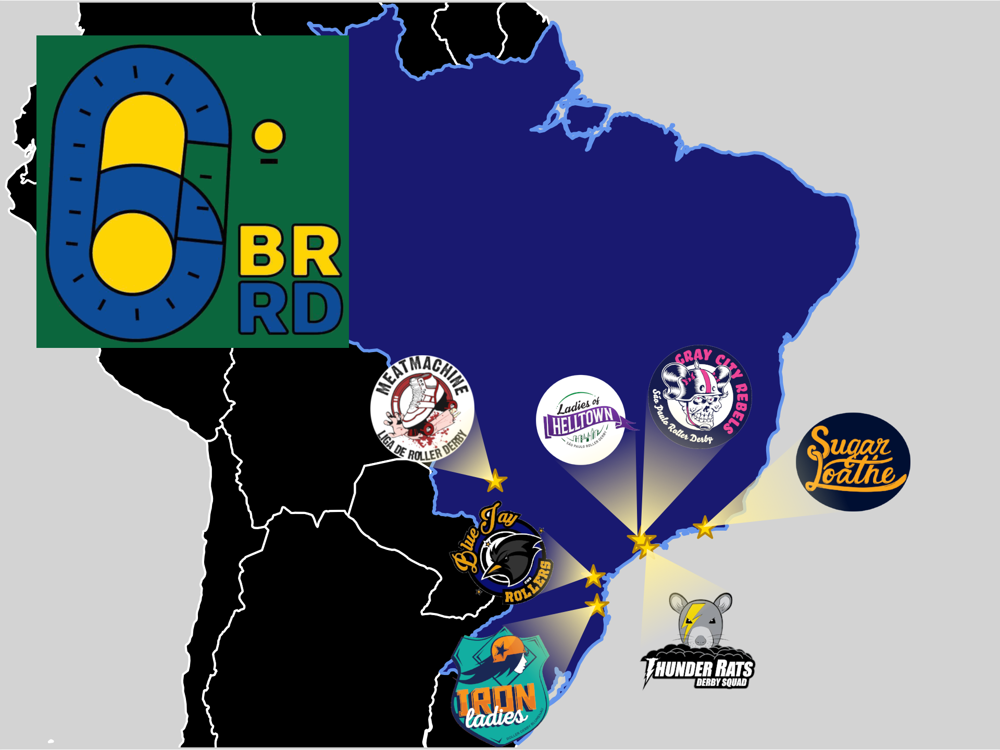
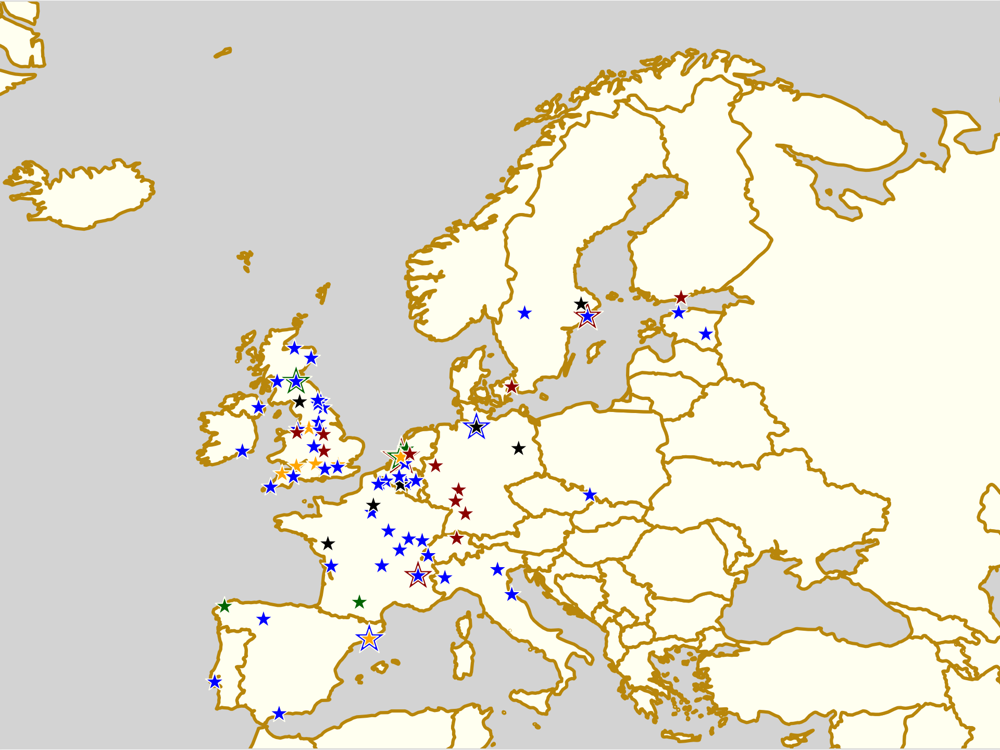

Non-US/Canadian Derby Roundup: 3rd/4th November Edition
Predictions of bouts are from FTS, if possible, and from our own SRD Rank where FTS cannot make predictions (for example: Latin America, or non-MRDA men’s bouts). (SRDRank also has recent WFTDA rankings, including the 31st June ranking, as well as SRDRank, and allows you to make predictions from them.)
If we’ve missed you from our roundup, please let us know! [Or add yourselves to FTS and/or Derbylisting]
We're trying a new colour coding this week, to differentiate BOUTS from RECRUITMENTS and OPEN SCRIMs, and BOOTCAMPs.
Scotland
In Scotland, whilst the big bouting event is Dundee's home teams game of the season, there's several open scrimmages going on for Halloween. (And Glasgow are off to Oldham for a game.)- Wed, Dalkeith: Lothian Derby Dolls are celebrating Halloween on the track, with an open scrim, Open To All genders, and aimed mostly at "B/C" level skaters, but rookie skaters also welcome. Refs and NSOs also welcome. Fancy dress encouraged [EVENT]
- Wed, Edinburgh: A new (as yet unnamed) Junior Roller Derby league practices and recruits at The Boardwalk, every Wednesday [EVENT]
- Thurs, Aberdeen: Granite City Roller Derby host an Open Scrim, Open To All genders, free for first time guests. Referees and NSOs also welcome. [EVENT]
- Thurs, Dumbarton: Chicks in Bowls Scotland host Quad Meet sessions [6-10pm, Unit23 Skatepark][EVENT]
- Fri, Edinburgh: United Sk8s host the (second?) Junior Derby training series in Edinburgh, starting with skating lessons and building up to derby [EVENT]
- Fri, Glasgow: Glasgow Men's Roller Derby's ongoing new skater intake continues every Friday, for the foreseeable future! [EVENT]
- Fri, Inverness: Inverness City Roller Derby host Netflix and Thrill, a Halloween themed Quiz Night [EVENT]
-
Dundee: Dundee Roller Derby host their home teams event for the year [EVENT]
- Black v White home teams game
- Glasgow: Resistance Roller Derby, Glasgow's Junior Roller Derby club for queer and trans young people continue their training sessions open to new skaters and existing. [EVENT Flyer]
- Sun, Aberdeen: Chicks in Bowls Scotland host a Sunday Skate followed by a park skate outside [Transition Extreme Sports] [EVENT]
- Sun, Dumbarton: Chicks in Bowls Scotland host all-ages coaching for Ramps and Bowls skating [10am-midday, Unit23 Skatepark?]
- Tues, Aberdeen: Chicks in Bowls Scotland host a regular Quad Meet (Transition Extreme) [EVENT]
United Kingdom
The UK as a whole is still pretty busy given it's the "post-season", with several Halloween scrims, including a "scrim tournament"! Plus there's home teams in London, and bouts in Oldham and Loughborough.- Wed, Kingston upon Hull, England: Hulls Angels Roller Derby host their Beginner's Intake, open under WFTDA-gender rules (female and non-binary/gender expansive), which is also the start of their training course [EVENT]
- Wed, Lincoln, England: Lincolnshire Bombers Roller Derby host their Halloween Raffle 2018, a chance for their supporters to raise funds and maybe win a prize! [EVENT]
- Wed, Sheffield, England: Sheffield Steel Roller Girls host the next in their series of weekly meet-and-greet events for interested potential new members (ahead of their formal recruitment later in the year) [EVENT]
- Wed, Wolverhampton, England: Wolverhampton Honour Rollers host Roller Derby Taster Session, as part of their recruitment. Open to All genders (we think), 18+. Register in advance for kit. [EVENT]
- Wed, Swansea, Wales: Swansea City Roller Derby host a Halloween Open Scrim - open to WFTDA-gender conforming skaters with min-skills. [EVENT]
- Thurs, Nottingham, England: Nottingham Hellfire Harlots rolling open recruitment continues, open to potential new skaters under WFTDA gender policy [EVENT]
- Thu, Swindon, England: Wiltshire Roller Derby host a free Try Roller Derby session for interested skaters [EVENT]
- Fri, Sunderland, England: Sunderland Roller Derby League host their own Halloween Open Scrim, WFTDA-gender policy. Sunderland versus outside skaters format. [EVENT]
- Fri, Bridgend, Wales: Bridgend Roller Derby host a Halloween rec Skate night, open to all. Costume encouraged. [EVENT]
-
Harrogate, England: Spa Town Roller Derby host Alice Through The Looking Glass, a "scrim tournament" (which might equally be described as a mixed teams tournament), open under WFTDA gender rules. 30 minute games into 40 minute final. [EVENT]
- Teams:
- Alice (Blue)
- Mad Hatters (Green)
- Cheshire Cat (Purple)
- Queen of Hearts (Red)
- Teams:
- Lincoln, England: Lincolnshire Bombers Roller Derby host the second part of their Recruitment Session for this year! This is a free taster session for their adult league, although information about junior league, Lincolnshire Bombinos is available too. [EVENT]
-
London, England: London Rockin' Rollers host the Big 2018 LRR Intraleague! This year their theme is in honour of lost team-mate Katiemean, and raises money for Marie Curie via the chance to donate for various modifications to the game. [EVENT]
- Wreck v Wreck game,
- [other intraleague bouts]
- Manchester, England: Arcadia Roller Derby host an Pick-up Scrim (no gender policy declared), open to mins-passed skaters. [EVENT]
- Oldham, England: Rainy City Roller Derby host their last home games of the year [EVENT]
- Sun, Eastbourne, England: Eastbourne Roller Derby host their New Skater Intake Session, Open To All genders, and all 18+ skaters of all experience. Also open to potential referees or NSOs. [EVENT]
- Sun, Loughborough, England: the Dolly Rockit Rollers host a double header as the season slowly comes to a close [EVENT]
- Mixed OTA game
- Dolly Rockit Rollers (Leicestershire) versus Hallam Hellcats (Sheffield) [FTS]
- Sun, Hereford, England: Hereford Roller Derby start their Novice Program for 2018, a 12 week course Open To All genders. [EVENT]
- Sun, Penarth, Wales: South Wales Silures host their monthly regular Open Mixed Scrim, Open To All genders, 18+ years old [EVENT]
- Tues, Wallasey, England: Wirral Roller Derby are hosting a rolling recruitment/intake every Tuesday for the next few weeks. Open To All genders, and to interested officials as well as skaters. [EVENT]
Europe
France continues to be ridiculously packed with derby this weekend, and it's not even a Championnat weekend! Meanwhile, Germany hosts several Bundesliga tournament fixtures, and Linz hosts the Austrian National Championship!- Wed, Charleroi, Belgium: Chicks in Bowls Belgium head to Charleroi for their next meet up, to try the new skate park! [EVENT]
- Wed, Ostrava, Czech Republic: Trojhali Ostrava Roller Derby continue their open training / recruitment [EVENT]
- Wed, Tartu, Estonia: Tartu Roller Derby co-host a Halloween Roller Disco at the Estonian National Museum; fancy dress compulsory, free entry [EVENT]
- Wed, Premariacco, Italy: The Banshees of Roller Derby Udine host Screeeammage! Halloween with the Banshees, which we think is an open scrimmage event? [EVENT]
- Wed, Wrocław (Breslau), Poland: Breslau Rebels Roller Derby + Breslau Avengers Roller Derby host their regular open training / recruitment [EVENT]
- Wed, Madrid, Spain: Roller Derby Black Thunders Madrid host a fundraising Halloween music event, with live music from Madre de Amor and LUST Hardcore, plus DJs later on. Fancy dress, of course, encouraged. [EVENT]
- Wed, Valencia, Spain: Rayo Dockers host the second of two recruitment days, with demonstrations of the game, and a chance to see what it's like for yourself. [EVENT]
- Thu, Essen, Germany: Ruhrpott Roller Derby host their monthly open evening at Cafe Nord, where you can get to know the team, and ask anything you want [EVENT]
- Fri, Tallinn, Estonia: Tallinn Roller Girls continue their regular open practice / recruitments for anyone who wants to join the sport [EVENT]
- Fri+Mon, Tartu, Estonia: Tartu Roller Derby also hold their regular open training and recruitment days on Fridays (sometimes sharing with Tallinn) [EVENT]
- Fri, Carrières-sous-Poissy, France: Les Succubes and Les Damnés Roller Derby 78 host a family roller disco as part of Téléthon 2018 (an Alsace-Lorraine community telethon fundraiser event) [EVENT]
- Fri, Pessac, France: Roller Derby Bordeaux Club host the first fixture of their home teams tournament at Vibrations Urbaines [EVENT]
- Boom Bright Gold versus Pink Cheeck Peaches
- Boom Bright Gold versus Rotten Black Grapes
- Fri, Groningen, Netherlands: Roller Derby Groningen host the last of their series of outreach / recruitment events, with another chance to try a beginner's practice session [EVENT]
- Sat+Sun, Linz, Austria: Linz Roller Derby, Steelcity Rollers, host the 2018 Austrian Roller Derby Championship. Day 1 will be a round robin with 30 minute games, to decide entry to the finals for the top two teams. Day 2 will hold the full length placement games for the Championship [FTS Tournament][EVENT]
- Teams:
- Dust City Rollers (Graz)
- Fearless Bruisers (Innsbruck)
- Steelcity Rollers (Linz)
- Vienna Roller Derby
- Teams:
-
Antwerp, Belgium: Antwerp Roller Derby's One Love Roller Dolls host the 2018 edition of the Brabo Cup! [FTS Tournament][EVENT]
- Teams:
- Lille Roller Girls (Lille A)
- Leeds Roller Derby
- Antwerp Roller Derby (One Love Roller Dolls)
- Glorious Basterds (Namur M) versus Les Vîkings (Liège) [FTS]
- Teams:
-
Clermont-Ferrand, France: Auver'Niaks host a double header event, Les Griffes du Roller Derby [EVENT]
- Auver'Niaks B versus "Bayern de Monique" (mixed team from Saint-Etienne, Valence, Vienne)
- Auver'Niaks A versus Brain Damage (Angoulême A) [FTS]
-
Chalon, France: The Rolling Storms host a double header event, with a Burton theme: the Nightmare before Derby [EVENT]
- Rolling Storms (Chalon) versus Les K.O'n'Ass (Auxerre) [FTS]
- Saone Valley Roller Girlz versus UB (exhib team)
-
Inguiniel, France: La Ferraille host their first ever game! [EVENT]
- La Ferraille versus UB (mixed team, probably mostly Vannes)
- Sat-Sun, Montpellier, France: DCCLM host two triple headers across the weekend, because apparently one isn't enough! [EVENT]
- Sat:
- Velvet Owls (Dijon) versus DCCLM A (Montpellier) [FTS]
- Les Duchesses (Nantes) versus DCCLM A [FTS]
- Les Duchesses versus Velvet Owls [FTS]
- Sun:
- Sat:
-
Bremen, Germany: The Meatgrinders host a Bundesliga Div 3 (North) bout as part of a double header [FTS Tournament][EVENT]
- Meatgrinders Bremen versus Berlin Rollergirls [Bundesliga D 3]
- Open Scrimmage
-
Cologne, Germany: Cologne Roller Derby host a home bout [EVENT]
- Unbreakabellas (Cologne B) versus Namur C [FTS]
-
Kassel, Germany: Kassel Roller Derby host a double header, including a Bundesliga Division 2 bout. [FTS Tournament] [EVENT]
- Gargörlz (Erfurt) versus Demolition Derby Dolls (Hannover) [FTS]
- Bashlorettes (Kassel) versus rocKArollers (Karlsruhe) [Bundesliga D 2]
- Nuremberg, Germany: Sucker Punch Roller Derby host their open training day, for anyone wanting to find out more about roller derby. Open To All genders, 16+; potential skaters, referees and NSOs. [EVENT]
-
Regensburg, Germany: Roller Derby Regensburg host a Bundesliga Div 3 (South) bout [FTS Tournament] [EVENT]
- Roller Derby Regensburg versus Roller Girls of the Apocalypse (Kaiserslautern) [Bundesliga D 3]
-
Cork, Ireland: Cork City Firebirds host The Samhain Slaughter, a Double Header event [EVENT]
- The Smashing Pumpkins versus Boo Radleys (open subs mixed game)
- Cork City Firebirds versus Oxford Roller Derby B [FTS]
-
Bologna, Italy: The Bone Crushing Hyenas host "Ready2Fight?", a Triple header round robin tournament [EVENT]
- Bone Crushing Hyenas (Bologna) versus Worst Warsaw [FTS]
- Splatter Fairies (Marburg) versus Worst Warsaw [FTS]
- Bone Crushing Hyenas versus Splatter Fairies [FTS]
- Sat-Sun, Lisbon, Portugal: Lisboa Roller Derby host "Tugamash'18 Taking It Down South", which seems to be a two day event with a game on the Saturday, and community events on the sun [EVENT]
- Open subscription game?
-
Helsingborg, Sweden: Helltown Hellcats host a single header [EVENT]
- Helltown Hellcats (Helsingborg) versus Midtdanmark Tæver (Danish exib) [FTS]
- Sun, Linz, Austria: Team Austria host a meeting for everyone wanting to be involved in the next stage of the national team, at the Austrian National Championships. (You can also message them if you can't be there in person.) [EVENT Flyer]
- Sun, Creil, France: The Knock'n'Roll Cannibals host a double header of derby against La Boucherie de Paris [EVENT]
- Sun, Lille, France: There's some kind of shadowy event in Lille on Sunday, involving at least Luxembourg versus Roller Derby Lille B [FTS], as well as two other games...
- Sun, Rennes, France: There's an inconsistently described scrimmage in Rennes with no event page, but FTS entries
- Sun, Essen, Germany: Ruhrpott Roller Girls host a single header event after their open day on Thursday. [EVENT]
- Ruhrpott Roller Girls B versus Suck City Rock'n' Rollers (Breda) [FTS]
- Sun, Utrecht, Netherlands: Dom City Roller Derby host another of their Sunday double headers [EVENT]


Pacific
The biggest event in the Pacific this weekend is the Rebellion Tournament 2018 in Melbourne, another giant Australian event! That's not to say there's still not plenty of derby elsewhere, though, especially in New Zealand.- Wed, Maylands, WA, Australia: WA Roller Derby host the second of their two Beginners' Q&A info sessions for interested potential skaters, referees and NSOs, ahead of their upcoming intake [EVENT]
- Thu, Hamilton, New Zealand: Hellmilton Roller Ghouls host a Quiz Night [EVENT]
- Fri, Osborne, SA, Australia: Lil' Adelaide Rollers host a Blue Light Roller Disco [EVENT]
- Fri, Tokyo, Japan: Kamikaze Badass Roller Derby Tokyo have regular training on Fridays, which new skaters are always welcome to [EVENT Flyer]
- Gledhow: Albany Roller Derby League - Albany Skate Fit- 2018 [EVENT]
- Albany, WA, Australia: Albany Roller Derby League celebrate Albany's Pride 2018 with a Big Gay Dance Party [EVENT]
-
Marrara, NT, Australia: Darwin Rollergirls host an Exhibition Scrimmage for the community [EVENT]
- Angels versus Demons
- Sat-Sun, Reservoir, VIC, Australia: Melbourne Northside Rollers host the 2018 edition of their biggest event, the Rebellion Tournament 2018, hosted with Skate Victoria [FTS Tournament] [EVENT]
- Division 1 Teams:
- Varsity Derby League "Dishonour Rollers"
- Convict City Rollers "Orange Thunder"
- Adelaide Roller Derby "rAdeladies"
- Victorian Roller Derby League "VICs"
- Canberra Roller Derby "Beta Max"
- Northside Rollers "Rebel Alliance"
- Division 2 Teams:
- South Sea Roller Derby
- Devil State Derby League (Tasmania)
- Kingston City Rollers
- Diamond Valley Roller Derby Club
- Tasmaniacs
- West Side Derby Dolls
- Geelong Roller Derby League
- Van Diemen Rollers
- Dragon City Roller Derby
- Team Regional Victoria
- Division 1 Teams:
-
Broadmeadow, NSW, Australia: Newcastle Roller Derby League host Purple Reign, a single header [EVENT]
- Newcastle Roller Derby League versus South Side Derby Dolls () [FTS]
-
Hamilton, New Zealand: Hellmilton Roller Derby host their Home Teams Final [EVENT Flyer]
- No City Skaters versus Northern Gentlemen () [FTS]
- Gang Green versus Ultra Violents (Hellmilton home teams Final)
-
New Plymouth City, New Zealand: Taranaki Derby Corps host their first home game of the year [EVENT]
- Taranaki Derby Corps "Rumble Bees" versus Whenua Fatales () [FTS]
- Sun, Mount Barker?, SA, Australia: the Rockabellas Roller Derby League host a Sausage Sizzle fundraiser! [EVENT]
- Sun, Okinawa, Japan: Devil Dog Derby Dames host the start of their Beginner Skater program, open to prospective skaters, referees and NSOs [EVENT]
- Sun, Christchurch, New Zealand: Otautahi Roller Derby host an open scrimmage, open to all mins-passed skaters, referees+NSOs also welcome [EVENT]
- Sun, Palmerston North, New Zealand: Swamp City Roller Derby host "The Next Breast Thing", a charity exhibition game to raise funds for the Breast Cancer Foundation [EVENT]
- Itty Bitty Titties versus Over Shoulder Boulders
- Mon, Perth, WA, Australia: Perth Roller Derby host the fourth date in their 6 week training programme for new recruits (you can sign up to individual sessions too) [EVENT]
- Tues, Hong Kong: Hong Kong Roller Derby host their monthly Fresh Meat night, for new recruits excited by their game the previous Tuesday! [EVENT]
- Wed, Bangkok, Thailand: Bangkok Roller Derby have their regular training evening, which is always open to new skaters [EVENT Flyer]

Latin America
As always, we find Latin America the hardest continent to keep tabs on. This weekend, though, the big event is the 2018 Brasileirão, Brazil's National Tournament, hosted this year by Ladies of Helltown!- Wed, Osorno, Chile: Deskarriadas RD host Halloween Sobre Ruedas (Halloween on Wheels), which we think is an open scrimmage level bout [EVENT]
- DeskaTrinas () versus Mundo Zombie (open subs)
- Wed, Santiago, Chile: Furias Roller Derby and Metropolitan Roller Derby co-host "Witch, Please.", a Halloween party event fundraiser [EVENT]
- All week?, Temuco, Chile: Nativas Roller Derby are holding open recruitment (with no dates, so presumably just get in touch) [EVENT]
- Wed+Mon, Xalapa, Mexico: We believe that Ráfagas Roller Derby run their intro to skating sessions on these days (intro to Roller Derby is on Wed+Fri) [EVENT Flyer]
- Wed, Fri, Mon, Montevideo, Uruguay: Tempestad Roller Derby continue their rolling recruitment [EVENT Flyer]
- Thurs+Mon, Ensenada, Mexico: Nereidas Ensenada Roller Derby have open recruitment at their training sessions [EVENT Flyer]
- Thurs+Sun?, Montevideo, Uruguay: Pájaros Pintados Roller Derby train, and are open to new skaters [EVENT Flyer]
- Fri-Mon, São Paulo, Brazil: Ladies of Helltown host the 7th Brasileirão de Roller Derby, Brazil's National Tournament! We've written a little about this here. [FTS Tournament][EVENT]
- Mixed no-contact game
- Ladies of Helltown (São Paulo) versus Iron Ladies (Blumenau)
- Thunder Rats Derby Squad ( ) versus Capivaras Roller Derby ()
- Gray City Rebels () versus winner (game 1)
- Blue Jay Rollers () versus winner (game 2)
- Consolation game
- Mixed full-contact game
- 3rd Place + Finals
- MVPs versus Vagine Regime.
- Fri, São Paulo, Brazil: There's also an officiating clinic to start off the Brasileirão! [EVENT]
- Fri, Mon, Tues, Santiago, Chile: Terror S-Quad Roller Derby running rolling recruitment at their weekly training sessions... [EVENT]
- Fri, San Jose, Costa Rica: Dark Side Roller Derby celebrate their 4th birthday
- Sun, Miramar, Argentina: the newly formed "Fussion Derby Club" host their first fixture, a double header [EVENT]
- Fussion Derby Club (Miramar) versus Brujas Roller Girls (Bahía Blanca) [FTS]
- Open pickup game (WFTDA-gender)
- Sun, Campo Grande, Brazil: Meat Machine Roller Derby are back, and hosting open training for anyone who wants to join on Sundays! [EVENT Flyer]


Africa and Middle East
In the MENA regions, there are the regular recruitment events happening this week.- Thurs, Pretoria, South Africa: P-Town Roller Derby's weekly funskate open-skating events continue, with the chance to meet+sign up with the team [EVENT]
- Sat+Mon, Dubai, United Arab Emirates: Dubai Roller Derby hold their usual practice sessions (which we think are open to interested new skaters, on prior request) [EVENT]
- Sun+Tues, Abu Dhabi, Emirate of Abu Dhabi: Abu Dhabi Roller Derby's recruitment season starts, with their practices open to new skaters who want to try the sport [EVENT Flyer]
Short Track Roller Derby: A first Scottish test
Whilst WFTDA's Rules of Flat Track Roller Derby are the (overwhelmingly*) most widely played version of Roller Derby in the modern world, there are situations where a smaller version of the game is better suited.
Tournaments with many teams have adopted variations like Sur5al, Derby Sevens, PivotStar rules, Chilean Brutal, and so on, to fit more games into a shorter space of time - but most of these rulesets only significantly adjust a few parameters: the game duration and or the maximum roster size, and scale other properties (like timeouts) to fit the new game length. PivotStar rules, as we reported earlier this year, also make changes to reduce the officiating load, but even then, you still need space for that full-sized track...
...which is why Rolla Skate Club's "Short Track Roller Derby", launched to the public at this year's Rollercon, is so exciting.
Short Track Roller Derby is built around making a more accessible, perhaps more "fun", version of Roller Derby, which needs less of every resource to run. A good comparison might be to five-a-side football or futsal, versus the "association football" of WFTDA derby rules.
In the words of the Owner of Roller Derby Athletics, and the co-founder of Rolla Skate Club, Booty Quake, "Through a series of long derby road trips together, Luludemon and I had time to hash out everything we could think of that was challenging to the growth of our home league, and leagues everywhere. Then we set out to create a game that would address some of those challenges! Luludemon had already pioneered the “Pivotstar” ruleset used at the Best of the West tournament in 2017. But we knew we could go even further. The game we’ve designed (with helpful rules and officiating consultation from Sir Cumference and Whack Job of NWO Roller Derby!) aims to be fun, fair, and safe. It’s also easy to orchestrate, with smaller teams, fewer officials, fewer game items to track, and a smaller playing surface. We hope this game will remove barriers for small and large leagues alike, and allow more people to participate in the empowering sport of roller derby!"
Most significantly, this means that the track (unlike all of those variant rules above) is rescaled to just half the area of a WFTDA Flat Track, and fits inside a standard UK four-court sports hall with ample room to spare*.
 Relative areas (including ref lanes) of: WFTDA track (pink), Short Track (reddish pink / magenta) and the minimum-allowed 4-court sports hall in the UK (black). (Second image shows how two Short Tracks will fit into one WFTDA track, with space to spare.)
Relative areas (including ref lanes) of: WFTDA track (pink), Short Track (reddish pink / magenta) and the minimum-allowed 4-court sports hall in the UK (black). (Second image shows how two Short Tracks will fit into one WFTDA track, with space to spare.)
With a smaller track comes the next resource saving: players. The narrower track means that just two blockers per team are sufficient to impede the opposing jammer, so each jam fields just six skaters on track in total; and rosters for a game are limited to just seven skaters per team.
In keeping with halving the number of players and size of track, Short Track also makes the same change to the next resource: time. Short Track jams are just 1 minute long (and can't be called off by a jammer), and a period consists of exactly 10 of them, for 10 minutes of play, and 15 minutes total time including the inter-jam breaks.
The final resource that the Short Track Roller Derby rules try to reduce is Officials. Unlike the other aspects of the sport, we can't just scale the number of Referees and NSOs without looking at what makes the game hard to officiate, so Short Track Roller Derby makes a series of changes to enable a game to be more easily managed. Some of these are inherited from PivotStar: jammers score just 1 point per pass, reducing the complexity of scoring; and track cuts returning from out of play are measured relative to where you left the track, not the opposing players who were in front of you at the time - that is, there are no "run backs" or "recycling".
On top of this, however, Short Track Derby also encourages a more communal spirit for handling penalties in general - the majority of potential penalties ("fouls" in the language of the rules) can be rectified by a skater by owning up to them and "yielding" (turning sideways, and giving skaters a chance to freely pass them) for a few seconds. Only more serious fouls, or fouls where the skater has not yielded, lead to a penalty being issued. Because there are so few skaters on track in the first place, penalties themselves also work differently; rather than sending a skater off the track, each penalty counts as a loss of 2 points to their team's score, a significant effect when each pass just gains a single point in return. These changes to combine to produce a ruleset where a single referee and two NSOs can officiate a game (at a pinch - the rules suggest that two referees is a more reasonable number).
Finally, Short Track Roller Derby also makes a few additional changes which aren't part of the "scaling" requirements - instead, they seem to be a collection of "if we'd been designing roller derby now, knowing what we do now" changes. The most significant of these are: everyone has to jam at least once per period; and the game changes direction at half-time - Period 1 is played clockwise, whilst Period 2 is played anticlockwise. The former rule makes the "jammer" position less of the "star role" it used to have back in the earlier days of modern Roller Derby - and also helps to "spread the roles" in general across the smaller rosters. The latter addresses the well-known issues with lopsided development which derby skaters get from skating in one direction all the time, and might actually result in long-term health improvements.
The best place to get the rules right now is the Rolla Skate Club site: https://rollaskateclub.com/lets-rolla/ (currently we have draft v2 of the rules) [but see the bottom of this article for more links]
Short Track Derby Testing in Scotland
With interest in Short Track Roller Derby across the world (the Short Track info group on Facebook has members from the ruleset's birthplace of Canada, as well as Scotland, England, Russia, Sweden, USA, Latvia, Israel, Netherlands, Poland, Germany, Australia, and probably others I've missed), the Scottish Roller Derby community decided to form a group to seriously test this exciting new ruleset, and see what it was like.
After a lot of planning and recruiting (we had access to a draft of the rules from before the official launch at Rollercon), the first "official" test of the rules in Scotland took place in Dunblane, on the 13th of October this year. (We believe that, at the time, this made this simultaneously the first test of Short Track Roller Derby outside the North American continent, and also the most Northerly test of Short Track Roller Derby, given the relative latitude of Dunblane and the majority of Canadian cities.)
Skaters attended this first session from across the country: from Dumfries in the South-West, and Ayrshire in the West, through the central belt from Glasgow through Falkirk and Livingston to the mid-Lothians south of Edinburgh in the East, and this despite the heavy rain and storms forecast for that weekend! We also had a wide distribution of experience in our test group, from high level competitive skaters to some newer members of leagues (who opted to NSO and make notes). This session was also run as Open To All Genders, which we think is also a first for Short Track so far.
In a relaxed three-hour session, we had time to lay a Short Track for the first time (in a hall too small for a "Full Track"), discuss the differences to WFTDA rules and people's points of interest and concern, and play a full-length scrimmage of the game, with a second discussion session after the first period for further reflection. After the session, a short feedback survey was sent out - at the time of writing, more than 70% of attendees responded with comments and ratings.
Skater Responses: Before and After
In the pre-scrim discussion, there was a clear division between parts of the rules with universally positive feeling, and parts which were controversial. Everyone was in favour of the smaller track and reduced roster (even larger leagues have problems with practice space, and some of our smaller leagues can have issues filling out two 14 team rosters for internal scrimmage). Conversely, a significant minority of skaters were unconvinced by "skating the wrong way" for one period of the game, and a similar number were not that happy with the requirement to jam at least once per period. It's certainly the case that there are skaters who have legitimate aversions to jamming, usually around being the focus of attention from the opposing team (and the audience in a public game), and it is possible that this might make Short Track less comfortable for them.
Our responses after the first period, and then in the feedback responses after the whole session, saw a significant change in feelings. No aspect of the game received a less than positive response, even the controversial items in the pre-game discussion. Changing direction (and skating in "non-derby" direction at all) seemed to be not really a problem once people tried it; some feedback even indicated a preference for it! Some of the skaters with an aversion to jamming were still not converted to regular jammers; but they all noted that the reduced number of blockers, and jam duration, made it a better experience than otherwise. (One skater, who regularly jams in their home league, went entirely the other way and noted that they specifically loved having everyone jam!).
No comments were strictly negative (no aspect of the game was rated below 4 (out of 6) by any of our respondents), but the aspect with the least positive response was the track size itself. Higher level skaters, and particularly those used to jamming or skating at high-speed, found it harder to adjust to the changes that the Short Track requires: both in terms of the reduced time for acceleration on the straights, and the smaller turning circle on the curves. As such, we found that those skaters gave the most qualified responses to the track, whilst still all accepting that this was due to their expectations being different.
Conversely, other skaters noted that the changes to pack definition and lack of run-backs actually made the game feel a lot faster than they were used to, especially in the half-time discussion. A lot of tactical discussion in half-time developed approaches to controlling space under the new rules, where "placing" yourself on the inside line by where you knocked a skater off-track is more effective than moving out of position. We noticed that tactics, and scoring, were already adjusting in the second period (although, given it was also run in the more familiar direction of play, it was also a little faster overall).
One skater noted that they found the yield position uncomfortable with pads on; we think this could be improved by just adjusting the hand position.
Officials Responses: Before and After
Due to a last-minute cancellation, our test scrim was run with just a single Referee, although one off-skates attendee provided "sock refereeing" support. We fielded the full complement of two NSOs (one Timekeeper and one Scorekeeper), with two additional NSOs mirroring them and taking notes. All Officials opted to use the infield, with none taking the outfield (if we had had two Referees, one would have been in the Outfield position).
Before the test, our referee noted that the problem with all alternate rules officiating is that the officials need to override their instincts for the places where rules differ. Our NSOs were generally not concerned by any issues in particular; our Timekeeper was happy that their job was simplified (because all jams are exactly 1 minute long barring accidents), and our Scorekeeper agreed to test out our new Score Tracking form.
After the test, and between periods, our referee noted that, whilst it was possible for him to referee the game by himself, it was definitely a stretch, even with a shadow "sock-referee". Concerns were also expressed about the reduced space in the infield; although our test run also made this more cramped as both our NSOs (and their 2 shadows) were also sharing this space. In a more "official" run, there would be only 1 NSO sharing the infield with any referees, reducing this issue. Officiating practice also evolved during the practice session: our referee noted that he had to consciously remember to call, and whistle, "warnings" (yields in Short Track); in WFTDA derby, warnings never require whistles (and anything is either a penalty or not a penalty). Conversely, our sock-referee was uniformly impressed with the ease of officiating the scrim, compared to WFTDA standard games. (Our sole skating referee actually managed to run the game by himself, without needing to refer to her for missed penalties.) She particularly called out the changes to penalties as a significant improvement to the speed of officiation.
One officiating issue concerned the verbal signal to indicate a successful pass: calling "1 point" or "1 pass" led to distraction of the skaters numbered 1 as they anticipated a penalty or yield. Consensus was that changing the call to "Pass: COLOUR" was the best arrangement to make the signal clearly different to a penalty - this has been fed back to the draft rules.
Our NSOs were both happy with managing the entire NSO load with just the two of them; in fact, our Score Tracking form allowed the Scorekeeper to track not only the score, but also which skaters had received penalties in each jam, for both teams simultaneously (doing the job of both Score trackers, and half the job of the penalty trackers for a WFTDA NSO crew). Whilst the Short Track rules don’t require penalties to be tracked per skater, the fact that this was additionally possible demonstrates how much easier it is to officiate the game.
Our shadow NSOs, who were both newer to Roller Derby, noted that they found the game in general easier to follow than WFTDA derby; mostly due to the reduced number of players leading to having less things to have to focus on at once.
Other Notes
All leagues present expressed an interest in using Short Track Roller Derby in some part of their activities in future. Higher level competitive leagues were more interested in incorporating the ruleset into training for specific skills, whilst the other leagues present expressed an interest in the game as an alternative in its own right. The reduced resource requirements made this a particularly attractive alternative for attending leagues with smaller practice spaces, in particular.
Of interest, one training suggestion from competitive leagues was in using Short Track as a stepping stone in blocking drills on the way to full 5 on 5 practice. This is also one of the uses suggested by early rules testers (pre version 1 release) at the Camp Block 'n' Roll bootcamp in Washington State.
As a personal aside, I was particularly interested in the changes to scoring differentials caused by the lack of lead jammer early-call-offs. The ability of the Lead Jammer to end a jam prematurely in WFTDA (and other rulesets) derby helps to amplify the scoring differential from even fairly closely matched teams; it seemed that removing it kept scores generally closer as a ratio.
Future Plans
The next open test for the Short Track Roller Derby rules in Scotland is already booked, hosted by Inverness City Roller Derby on the 25th of November. This event is ticketed, so sign up and buy a ticket if you're interested!
Short Track Roller Derby was also a topic at the 2018 Big Blether, the Scottish Roller Derby community annual conference, where there was almost entirely positive reception to it.
We've also had additional interest in Short Track Roller Derby within the UK, and have extended our Facebook group to cover the UK as a whole. Anyone interested in trying Short Track Derby within the UK is welcome to join the group and work with us (but we're happy if you want to do your own thing, too).
Version 2.0 of the rules of Short Track Roller Derby is currently receiving feedback (we used a draft copy for our open test), and will be released in the near future. To participate in the community, your best bet is to join both the above UK group, and or the official main Group, managed by Booty Quake: Short Track Roller Derby Info.
- Derbylisting.com reports more than 97% of leagues, depending on how you count, play by WFTDA rules.
**more exactly: a WFTDA Flat Track (with ref lanes) fits in a 108' by 75' rectangle. A Short Track (with ref lanes) fits within a 73' by 48' rectangle; 68% of the length, and 64% of the width, resulting in an overall area just 43% of a WFTDA Flat Track. In fact, two Short Tracks can fit within a WFTDA Flat Track side by side, with a comfortable 10' gap between them.
***SportEngland's minimum dimensions for a 4-court hall are 34m x 20m (111' x 65'), 10' too narrow for the WFTDA Flat Track; conversely, a Short Track fits with more than 15' space in both directions. In fact, a Short Track will even fit within the smaller, rarer, 3-court hall with room to spare!
Non-US/Canadian Derby Roundup: 27th/28th October Edition
Predictions of bouts are from FTS, if possible, and from our own SRD Rank where FTS cannot make predictions (for example: Latin America, or non-MRDA men’s bouts). (SRDRank also has recent WFTDA rankings, including the 31st June ranking, as well as SRDRank, and allows you to make predictions from them.)
If we’ve missed you from our roundup, please let us know! [Or add yourselves to FTS and/or Derbylisting]
We're trying a new colour coding this week, to differentiate BOUTS from RECRUITMENTS and OPEN SCRIMs, and BOOTCAMPs.
Scotland
In Scotland, whilst there's a lot of recruitment and ramp time, the big derby fixture is in Aberdeen, as Granite City Roller Derby celebrate their 10th birthday!- Wed, Edinburgh: A new (as yet unnamed) Junior Roller Derby league practices and recruits at The Boardwalk, every Wednesday [EVENT]
- Thurs, Dumbarton: Chicks in Bowls Scotland host Quad Meet sessions [6-10pm, Unit23 Skatepark][EVENT]
- Fri, Aberdeen: Granite City Brawlers, Aberdeen's MRDA member league, host another in their series of open nights, for anyone interested to try out skating and derby for themselves [EVENT]
- Fri, Edinburgh: United Sk8s host the (second?) Junior Derby training series in Edinburgh, starting with skating lessons and building up to derby [EVENT]
- Fri, Glasgow: Glasgow Men's Roller Derby's ongoing new skater intake continues every Friday, for the foreseeable future! [EVENT]
- Fri, Grangemouth: Bairn City Rollers host a open scrim for all genders, for Halloween! This event is also open to referees or NSOs who wish to practice their skills as well. [EVENT]
- Fri, Kirkwall (Orkney): Orkney ViQueens host another "Have a Go" session, open to anyone to try Roller Derby for themselves. Open To All genders. [EVENT]
-
Aberdeen: Granite City Roller Derby celebrate their 10th Anniversary with a triple header, a ceilidh and a Masquerade Ball! [EVENT]
- Rookie bout (WFTDA-gender, up to 5 games experience)
- Open To All mixed-experience bout
- Advanced bout (WFTDA-gender)
- Off-skates Orcadian-style Strip the Willow (mini-ceilidh)
- [Followed by Masquerade Ball]
- Glasgow: Resistance Roller Derby, Glasgow's Junior Roller Derby club for queer and trans young people continue their training sessions open to new skaters and existing. [EVENT Flyer]
- Sun, Aberdeen: Chicks in Bowls Scotland host a Sunday Skate followed by a park skate outside [Transition Extreme Sports] [EVENT]
- Sun, Dumbarton: Chicks in Bowls Scotland host all-ages coaching for Ramps and Bowls skating [10am-midday, Unit23 Skatepark?]
- Sun, Falkirk: Voodoo Roller Derby host a recruitment/ try derby day which is only advertised on Instagram... [EVENT Flyer]
- Tues, Aberdeen: Chicks in Bowls Scotland host a regular Quad Meet (Transition Extreme) [EVENT]
United Kingdom
Whilst the main event in the UK as a whole is clearly the first ever WFTDA Continental Cup for Europe in Telford (last two bouts on BBC Sport for UK viewers!), there's a surprising amount of Halloween-themed derby across the rest of the country, be they scrims or full bouts.- Wed, Sheffield, England: Sheffield Steel Roller Girls host the next in their series of weekly meet-and-greet events for interested potential new members (ahead of their formal recruitment later in the year) [EVENT]
- Thurs, Nottingham, England: Nottingham Hellfire Harlots rolling open recruitment continues, open to potential new skaters under WFTDA gender policy [EVENT]
- Fri, Milton Keynes, England: Rebellion Roller Derby's Open Training for WFTDA-gender conforming skaters continues! These are coached sessions alongside the team, open to mins-passed skaters [EVENT]
- Fri, Swindon, England: Wiltshire Roller Derby host their regular mixed open-to-all scrims, with alternating gender policy to suit all attendees [EVENT]
- Fri, Telford, England: As with all WFTDA events this year, a WFTDA World Summit Satellite event accompanies the Continental Cup this weekend, giving all members of the Roller Derby community (WFTDA members or not) a chance to connect with WFTDA leadership [EVENT]
- Havant, England: Portsmouth Roller Wenches host an A/B double header [EVENT]
-
Houghton Regis, England: Rebellion Roller Derby host a Halloween-themed double header, including a rookie debut bout [EVENT]
- Rookie Debut bout (open to external rookie skaters)
- Rebel Uprising (Rebellion B | Bedfordshire) versus Terra Hurtz (Killa Hurtz B | Chelmsford) [FTS]
- Manchester, England: Manchester Roller Derby host a Halloween Roller Disco, including fancy dress (and prize), and "spooky themed music and cakes" [EVENT]
- (Sat-Sun), Telford, England: Birmingham Blitz Dames host the first ever WFTDA European Continental Cup! We've covered this in more detail here. [FTS tournament][EVENT]
- Teams attending:
- Birmingham Blitz Dames
- Central City Roller Derby (Birmingham)
- Dock City Rollers (Gothenburg)
- Dublin Roller Derby
- Kallio Rolling Rainbow (Helsinki)
- Middlesbrough Roller Derby
- Newcastle Roller Girls
- Tiger Bay Brawlers (Cardiff)
- Teams attending:
- Sun,Bletchley, England: Milton Keynes Roller Derby, the Concrete Cows, host a an Officiating Clinic run by Referee Orla Skew (Skewblogs) and NSOs Nutz and Judge Tread. This will finish in an OTA scrim (open to submissions) [EVENT]
- Sun, Bournemouth, England: Dorset Knobs Roller Derby and Dorset Roller Girls co-host their New Skater Intake for the Open-To-All Dorset Roller Derby. This is the start of an 18-week comprehensive program on skate skills and derby skills [EVENT]
- Sun, Manchester, England: Manchester Roller Derby host another of their regular Mixed Level, Open, All-Gender Scrims. Also always open to Referees or NSOs who want to get in some practice. [EVENT]
- Sun, Newton Longville, England: Rebellion Roller Derby follow up their double header with a free try-derby day for interested potential recruits. [EVENT]
- Sun, Sunderland, England: Sunderland Roller Derby host "Harry Potter and The Triquizard Tournament", a Harry Potter themed quiz fundraiser [EVENT]
- Sun, Wakefield, England: Wakey Wheeled Cats Roller Derby host an All Gender Sevens Roller Derby Tournament [EVENT]
- Teams competing:
- York Monsters (York OTA)
- Border City Daemons (Carlisle OTA)
- DeadCats
- Hinch-ish
- The Seven Deadly Drunks
- The QuadnifisSkate Seven
- Teams competing:
- Sun, Wallasey, England: Wirral Roller Derby host a Super Sunday Scrim Halloween Special: an open scrim open to all genders (with WFTDA-gender and MRDA-gender lineups to suit all requirements). Also open to Referees or NSOs who want to practice their skills. [EVENT]
- Sun, Belfast, Northern Ireland: Belfast Roller Derby host a Halloween Quiz, with appropriately spooky questions! [EVENT]
- Sun, Cardiff, Wales: Chicks in Bowls Bristol are off to Cardiff for Halloween for some fun on the ramps at Rampworld! [EVENT]
- Sun, Flint, Wales: North Wales Roller Derby host another Sunday open recruitment in their weekly series this month. [EVENT]
- Mon, Barnstaple,England,United Kingdom: North Devon Roller Derby host their Roller Derby Intake for 2018, open to all potential members from skaters through referees, NSOs and other volunteers [EVENT]
- Mon, Nottingham, England: Nottingham Roller Derby host a "Track or Treat" Halloween themed open scrim, open to all genders, and referees and NSOs welcome if they want to work on skills too [EVENT]
- Mon, Peterborough, England: Borderland Brawlers Roller Derby continue their series of New Skater Intake sessions, Open To All genders [EVENT]
- Tues, Bath, England: Bath Roller Derby Girls host a Pub Quiz with a Halloween theme, raising funds for SARSASupport [EVENT]
- Tues, Durham, England: Durham Roller Derby host a Halloween Open Scrim, open to any groups of skaters who also bring an official with them! [EVENT]
- Tues, Lincoln, England: Lincolnshire Bombers Roller Derby host their Open-To-All genders Halloween Scrim (also open to any referees or NSOs who want to get in some practice [EVENT]
- Tues, Wallasey, England: Wirral Roller Derby are hosting a rolling recruitment/intake every Tuesday for the next few weeks. Open To All genders, and to interested officials as well as skaters. [EVENT]
- Wed, Lincoln, England: Lincolnshire Bombers Roller Derby really like Halloween, as they're also holding a Halloween Raffle draw as a fundraiser [EVENT]
Europe
The French Championnat starts up for another season this weekend, as the German Bundesliga's current season is slowly completing its run. There's also a host of derby across the rest of the continent - and a first for Roller Derby Moscow - the Rolleciraptors - holding their first big outreach session ever!- Wed, Couillet, Belgium: Chicks in Bowls Belgium host a meetup in the Charleroi area, for some skatepark action [EVENT]
- Wed, Ostrava, Czech Republic: Trojhali Ostrava Roller Derby continue their open training / recruitment [EVENT]
- Wed, Wrocław (Breslau), Poland: Breslau Rebels Roller Derby + Breslau Avengers Roller Derby host their regular open training / recruitment [EVENT]
- Wed+Thurs+Tues, Poznań, Poland: Bad Rangers Roller Derby Poznań are running open training all October for interested potential members [EVENT Flyer]
- Thurs, Saint Dizier, France: Roller Derby Saint Dizier host a recruitment event [EVENT Flyer]
- Fri, Tallinn, Estonia: Tallinn Roller Girls continue their regular open practice / recruitments for anyone who wants to join the sport [EVENT]
- Fri+Mon, Tartu, Estonia: Tartu Roller Derby also hold their regular open training and recruitment days on Fridays (sometimes sharing with Tallinn) [EVENT]
- Fri, Le Havre, France: Le Havre Roller Derby host their recruitment day for this season, open to all genders, and to referees and NSOs as well as competitive skaters [EVENT]
- Fri, Groningen, Netherlands: Roller Derby Groningen host the next event in their series of open events - a chance to attend an open training session and see what the game looks like [EVENT]
- Floreffe, Belgium: Namur Roller Girls host a triple header of Roller Derby for A, B and C teams [EVENT]
-
Aalborg, Denmark: Aalborg Roller Derby host Blocktoberfest, an international bout for October [EVENT]
- Combat Bullies (Aalborg A) versus Plymouth City Roller Derby [FTS]
-
Bédarrides, France: Roller Derby Avignon host the first fixture of the Championnat de France National 2 [FTS tournament][EVENT]
- Les Amazones (Pays d'Aix) versus Bones Breakers (Nîmes)
- Coccyx Lexis (Perpignan) versus Rabbit Skulls (Avignon)
- Baywitch Project (Nice) versus Head Hunters (Narbonne)
- Coccyx Lexis versus Head Hunters
- Rabbit Skulls versus Bones Breakers
- Sat+Sun, Dijon, France: Les Flèches Revêches host the other first fixture of the 2018/9 season of the Championnat de France, National Division 2 [FTS tournament][EVENT]
- Les K.O'nASS (Auxerre) versus Les Flèches Revêches (Dijon)
- Les Nasty Pêcheresses (Montreuil) versus Les Simones (Orléans)
- Les Silly Geez (Tours) versus Les Tamponneuses (Paris / )
- Les Simones versus Les Flèches Revêches
- Les Nasty Pêcheresses versus Les Tamponeneuses
- Paris, France: Paris Rollergirls host their third session of their recruitment series for new skaters [EVENT]
-
Saint-Gratien, France: Roller Derby Panthers host a double header event, La Track Aux Sorcières (the Track of Witches) [EVENT]
- Panthers Miaou (Saint-Gratien B) versus Baronnes von Schlass (Roller Derby Lille B) [FTS]
- Panthers Graou (Saint-Gratien A) versus UB (mixed pickup team, Championat de France 1/Elite level)
- Berlin, Germany: Quad Roller Skate Shop, supplying Roller Derby in Berlin and Europe for years, is closing down its physical store. From this Saturday, they're hosting a brief "everything must go" fleamarket sale for everything left in the shop, from stock through to fixtures and fittings! [EVENT]
-
Marburg, Germany: Marburg 's Splatter Fairies host a single header event [EVENT]
- Splatter Fairies (Marburg) versus Sucker Punch (Nürnberg) [FTS]
-
Münster, Germany: Zombie Rollergirlz Münster host a Bundesliga Division 2 bout [FTS tournament][EVENT]
- Zombie Rollergirlz (Münster) versus Demolition Derby Dolls (Hannover) [Bundesliga D 2]
- Oberhausen, Germany: the Mine Monsters of Oberhausen host a Triple Header of Roller Derby [EVENT]
-
Potsdam, Germany: The Prussian Fat Cats host a pair of Bundesliga division 3 bouts [FTS tournament][EVENT]
- Prussian Fat Cats (Potsdam) versus Meatgrinders (Bremen)
- Berlin Rollergirls versus Riot Rocketz (Leipzig)
- Athens, Greece: Athens Roller Derby host a recruitment day with an open training session so you can see what Derby is really like [EVENT]
- Milan, Italy: the Harpies of Roller Derby Milano host their very first home event of 2018, and it's a big one! [EVENT]
- Barcelona, Spain: Barcelona Roller Derby host a double header of derby action [EVENT]
-
Malmö, Sweden: Crime City Rollers host a bit of a warm-up before heading off to WFTDA Champs [EVENT]
- Crime City Rollers (Malmö) versus Helsinki All-Stars (Helsinki A) [FTS]
- (Sat+Sun) Stockholm, Sweden: Stockholm Roller Derby host Hallowheels - a weekend-long event of bouts and tryouts! [EVENT]
- Sun, Antwerp, Belgium: Antwerp Roller Derby host another Sunday in their rolling recruitment, running every Sunday this month [EVENT]
- Sun, Epinal, France: Reaper's Crew host a double header of Roller Derby [EVENT]
- La Raclée (Dijon M) versus Unnamed Basterds (mixed subs team)
- Reaper's Crew (Epinal) versus Rhine Rebels (Basel) [FTS]
- Sun, Rovaniemi, Finland: Rovaniemi Roller Derby host an open try-NSOing day to let prospective non-skating officials, who want to support derby without being on skates, try out the various roles [EVENT]
- Sun, Breda, Netherlands: Suck City Rock 'n Roller Dolls host a double header event [EVENT]
- Sun, The Hague, Netherlands: The Parliament of Pain host open training / try derby recruitment sessions for anyone interested each Sunday. PoP are explicitly interested not just in skaters, but in anyone wanting to contribute in any way: referees, NSOs, announcers, medics, coaches, photographers etc [EVENT]
- Sun, Coimbra, Portugal: The Rocket Dolls of Roller Derby Coimbra host Bootcamp coached by GMRD/Team Scotland Roller Derby's Rosie Peacock![EVENT]
- Sun, Moscow, Russia: newly named Rolleciraptor Derby Moscow host an exciting evening to launch their league! [EVENT]
- Screening of Whip It ("Roll out!" in Russian release)
- Presentation: "Why Roller Derby Will Save The World"
- Meet the Team / recruitment info
- Sun, Madrid, Spain: Roller Derby Madrid host their day of try-outs to join the team, also open to potential new referees or NSOs. [EVENT]
- Mon, Groningen, Netherlands: Roller Derby Groningen host the third of their outreach events, a chance to try what attendees have seen on the previous Friday for themselves [EVENT]
- Mon+Wed, Valencia, Spain: Rayo Dockers host two recruitment days for all interested skaters [EVENT]
- Tues, Berlin, Germany: Chicks in Bowls Berlin host a Halloween Night session! [EVENT]


Pacific
There's too much derby across Australia to summarise neatly - in pretty much every state there's some kind of bout, and New Zealand is even more packed with action, relatively speaking!- Thurs, Noarlunga, SA, Australia: Rockabellas Roller Derby League host a meet-and-greet event for all kinds of interested people: adult skaters, junior skaters (12+), and potential referees and NSOs! [EVENT]
- Fri, Gold Coast, QLD, Australia: East Coast Derby Dolls host Hell On Wheels at Halloween Roller Derby Bout, with two mashup teams [EVENT]
- The Black Deaths versus The White Zombies
- Fri, Campbelltown, SA, Australia: Murder City Roller girls host a meet-and-greet event for prospective members of Campbelltown's Roller Derby league - from skaters through referees and non-skating officials [EVENT]
- Fri, Moe, VIC, Australia: Gippsland Ranges Roller Derby host a Halloween Family Skate, a fancy-dress roller disco! [EVENT]
- Fri, Tokyo, Japan: Kamikaze Badass Roller Derby Tokyo have regular training on Fridays, which new skaters are always welcome to [EVENT Flyer]
-
Surry Hills, NSW, Australia: Sydney Roller Derby League host FRIGHT NIGHT, a Halloween-themed intraleague extravaganza [EVENT]
- Teams: Toil and Trouble, Smack o Lanterns, Bite Club, Rotten Rollers
-
Brisbane, QLD, Australia: Sun State Roller Derby host a Double Header for Halloween, as their A and B teams take on mixed teams [EVENT]
- Killer Bees (Sun State B | Brisbane) versus The World
- Swarm (Sun State A | Brisbane) versus The World
- Maryborough, QLD, Australia: Maryborough Roller Derby and the Red Hot Chili Rollers host an Halloween open Skate Day [EVENT]
-
Townsville, QLD, Australia: Towns Villains Roller Derby host a Halloween Spooktacular Bout, potentially a double header [EVENT]
- Pumpkins versus Ghosts (WFTDA-gender intraleague)
- Potential "Coed bout" [OTA intraleague]
-
Campbelltown, SA, Australia: Murder City Roller Girls follow up their meet-and-greet with a public intraleague, the "Rocky Horror Roller Show" [EVENT]
- Frank'n'Rollers versus Dammit Janets
-
Reservoir, VIC, Australia: Victoria Men's Roller Derby host an MRDA Sanctioned bout[EVENT]
- VMRD Vanguard (Victoria M) versus Capital Carnage (Canberra M) [FTS]
-
Mirrabooka, WA, Australia: Perth Roller Derby host the 6th bout in this season of their intraleague series [EVENT]
- Apocalipstiks versus Mistresses of Mayhem (home teams)
- Yokosuka, Japan: Yokosuka Sushi Rollers and Yokosuka Mochi Pounders co-host a family skate night for Halloween, at the Bubble Gym in Ikego [EVENT Flyer]
- Palmerston North, New Zealand: Swamp City Roller Derby celebrate the end of the 2018 season [EVENT]
-
Rotorua, New Zealand: Sulphur City Steam Rollers host a "Live Roller Derby Spooktacular" to raise funds for New Zealand Roller Derby reps to attend the St John Mental Health First Aid Course [EVENT]
- Sulphur City Mixed Team versus Team Crazy Legs Aotearoa (New Zealand exhibition team for members with "invisible illnesses")
-
Tahunanui, New Zealand: The Sirens of Smash host a "Roller Derby Triple BeHeadHer" for Halloween, a triple header round robin tournament [EVENT]
- Sirens of Smash A (Nelson Bay A) versus Otautahi Roller Derby [FTS]
- Otautahi Roller Derby versus Bonnie Brawlers (Dunedin Derby B) [FTS]
- Sirens of Smash A versus Bonnie Brawlers [FTS]
-
Timaru, New Zealand: Timaru Roller Derby host a "Superheroes versus Villains" intraleague bout! [EVENT]
- Superheroes versus Villains
-
Wanganui, New Zealand: The West Coast Bombers host The Big Derby Mash Up, a multigame tournament [EVENT]
- Sur5al tournament with new / freshie skaters
- "Mixed Gender" intraleague bout
- Black v White scrimmage
- Sun, Hurstville, NSW, Australia: South Side Derby Dolls host the Grand Final of the Home teams season [EVENT]
- Resistance Rollers versus B.B. Sk8ters (home teams)
- Sun, Gladstone, QLD, Australia: Gladstone PCYC Roller Derby host a dedicated merch sale, with all their merch on sale for one day in one place [EVENT]
- Sun, Osborne, SA, Australia: Lil' Adelaide Rollers host their Halloween SPOOKtacular, an open skate party for all ages! [EVENT]
- Sun, , Westbury, TAS, Australia: Devil State Derby League host their regular Monthly Scrim, open all skaters with Skate Vic insurance [EVENT]
- Sun, Brunswick, VIC, Australia: Chicks in Bowls Melbourne host a "sunset session", which is also the last event with Lady Trample present (given her transfer) [EVENT]
- Sun, Carrum Downs, VIC, Australia: South Sea Roller Derby host their Freshie Intake Fun Day, the opening session to their learn to Derby course [EVENT]
- Sun, Reservoir, VIC, Australia: Victorian Roller Derby League host a single header against the National Champions from Canberra [EVENT]
- All Stars (Victorian A) versus Vice City Rollers (Canberra A) [FTS]
- Sun, Albany, WA, Australia: Albany Roller Derby League host another of their Sunday Skate Sessions, open skate for all ages [EVENT]
- Sun, Maylands, WA, Australia: Perth Men's Derby faces The World! [EVENT]
- Perth Men's Roller Derby versus The World (open subs exhib team)
- Sun, Maylands, WA, Australia: WA Roller Derby host the first of two Beginners Q&A info sessions for potential new members - skaters, referees and NSOs. [EVENT]
- Mon, Perth, WA, Australia: Perth Roller Derby host the third date in their 6 week training programme for new recruits (you can sign up to individual sessions too) [EVENT]
- Tues, Hong Kong: Hong Kong Roller Derby host a public intraleague bout [EVENT Flyer]
- Wed, Bangkok, Thailand: Bangkok Roller Derby have their regular training evening, which is always open to new skaters [EVENT Flyer]

Latin America
As always, we find Latin America the hardest continent to keep tabs on. However, Bogotá and Mexico City are definitely pretty busy this weekend, with the Day of the Dead themed Torneo Calavera in the latter!- All week?,, Temuco, Chile: Nativas Roller Derby are holding open recruitment (with no dates, so presumably just get in touch) [EVENT]
- Wed+Mon, Xalapa, Mexico: We believe that Ráfagas Roller Derby run their intro to skating sessions on these days (intro to Roller Derby is on Wed+Fri) [EVENT Flyer]
- Wed, Fri, Mon, Montevideo, Uruguay: Tempestad Roller Derby continue their rolling recruitment [EVENT Flyer]
- Thurs+Sun?, Montevideo, Uruguay: Pájaros Pintados Roller Derby train, and are open to new skaters [EVENT Flyer]
- Fri, Mon, Tues, Santiago, Chile: Terror S-Quad Roller Derby running rolling recruitment at their weekly training sessions... [EVENT]
- Bogotá, Colombia: Bogotá Patina (Bogota Skate) host a Halloween skate party, including support from Central Derby D.C Roller Derby, Combativas Revoltosas and Rock N Roller Queens [EVENT]
- Sun, La Plata, Argentina: Chat Noir Roller Derby host a 90s themed bout event! [EVENT]
- "90s FEST" bout (presumably intraleague)
- "Britney" themed scrimmage (open subscription teams)
- Sun, Mar del Plata, Argentina: Rebeldes del Asfalto Roller Derby host a Flash Tattoo evening, with stalls from many artists, plus live music! This fundraiser helps support the team [EVENT]
- Sun, Campo Grande, Brazil: Meat Machine Roller Derby are back, and hosting open training for anyone who wants to join on Sundays! [EVENT Flyer]
- Sun, Bogotá, Colombia: Maquina del Mal are hosting what seems to be a Sur5al themed tournament, Hallowheels! [EVENT Flyer]
- Sun, Querétaro, Mexico: Querétaro Roller Derby host the return of their Torneo Calavera, a tournament for the day of the dead! [EVENT]
- Teams: (women's)
- Fugaz Roller Derby (Toluca)
- Mexico City Roller Derby
- Querétaro Roller Derby
- Teams: (men's)
- Minotauros LRDCM (Mexico City)
- Crows Roller Derby (Querétaro)
- Teams: (women's)


Africa and Middle East
In the MENA regions, there are the regular recruitment events happening this week.- Thurs, Pretoria, South Africa: P-Town Roller Derby's weekly funskate open-skating events continue, with the chance to meet+sign up with the team [EVENT]
- Fri, Dubai, United Arab Emirates: Dubai Roller Derby demonstrate the Short Track Derby ruleset as part of their feature track at the Worlds Strongest Man event [EVENT Flyer]
- Sat+Mon, Dubai, United Arab Emirates: Dubai Roller Derby hold their usual practice sessions (which we think are open to interested new skaters, on prior request) [EVENT]
- Sun+Tues, Abu Dhabi, Emirate of Abu Dhabi: Abu Dhabi Roller Derby's recruitment season starts, with their practices open to new skaters who want to try the sport [EVENT Flyer]
Non-US/Canadian Derby Roundup: 20th/21st October Edition
Predictions of bouts are from FTS, if possible, and from our own SRD Rank where FTS cannot make predictions (for example: Latin America, or non-MRDA men’s bouts). (SRDRank also has recent WFTDA rankings, including the 31st June ranking, as well as SRDRank, and allows you to make predictions from them.)
If we’ve missed you from our roundup, please let us know! [Or add yourselves to FTS and/or Derbylisting]
(Note: we're especially likely to be missing items this week, as Facebook's response to the Cambridge Analytica scandal has resulted in them turning off large parts of the services we use to automatically collate events for this article. We don't think we've missed too much, but...)We're trying a new colour coding this week, to differentiate BOUTS from RECRUITMENTS and OPEN SCRIMs, and BOOTCAMPs.

Scotland
Other than recruitments, it's fairly quiet in Scotland this weekend, mainly because the Big Blether 2018, Scotland's yearly community conference, is being held in Glasgow! The action with Scottish teams is across the border in Newcastle, where Auld Reekie are playing.- Wed, Edinburgh: A new (as yet unnamed) Junior Roller Derby league practices and recruits at The Boardwalk, every Wednesday [EVENT]
- Thurs, Dumbarton: Chicks in Bowls Scotland host Quad Meet sessions [6-10pm, Unit23 Skatepark][EVENT]
- Fri, Edinburgh (Transgression Park): Chicks in Bowls Scotland host a Quad and Inline Night [EVENT]
- Fri, Edinburgh: United Sk8s host the (second?) Junior Derby training series in Edinburgh, starting with skating lessons and building up to derby [EVENT]
- Fri, Glasgow: Glasgow Men's Roller Derby's ongoing new skater intake continues every Friday, for the foreseeable future! [EVENT]
- Aberdeen: Granite City Roller Derby host a Taster session for both Skaters and budding officials, all kit provided. This session is open to all skill levels, and Open To All genders (non-skaters interested in NSOing etc are also welcome) [EVENT]
- Edinburgh: Auld Reekie Roller Girls host the second of their 4 taster days - an introduction to Scrimmage, including sock derby scrimmage, and a demo of high level derby (with a chance to NSO) [EVENT]
- Glasgow: Mean City Roller Derby host the second edition of Scotland's yearly community forum, The Big Blether, discussing the issues for Scottish Roller Derby amongst all Scottish leagues. [no EVENT?]
- Glasgow: Resistance Roller Derby, Glasgow's Junior Roller Derby club for queer and trans young people continue their training sessions open to new skaters and existing. [EVENT Flyer]
- Sun, Aberdeen: Chicks in Bowls Scotland host a Sunday Skate followed by a park skate outside [Transition Extreme Sports] [EVENT]
- Sun, Dumbarton: Chicks in Bowls Scotland host all-ages coaching for Ramps and Bowls skating [10am-midday, Unit23 Skatepark?]
- Tues, Aberdeen: Chicks in Bowls Scotland host a regular Quad Meet (Transition Extreme) [EVENT]
United Kingdom
The rest of the UK is pretty busy, with bouts up and down the country, from Newcastle's double header, the return of Track Attack international tournament in Nottingham, and London B taking on Rainy B in the second-most exciting matchup those two leagues could have scheduled...- Wed, Eastbourne, England: Eastbourne Roller Derby host their monthly Free Scrim, Open To All genders and to All Ages: the scrim will run with alternating Juniors/WFTDA-gender/MRDA-gender jams to accommodate all [EVENT]
- Wed, Sheffield, England: Sheffield Steel Rollergirls host their first in a series of weekly meet and greet events, where the interested can meet members of the team in an informal setting to learn more about the sport and the team [EVENT]
- Thurs, Nottingham, England: Nottingham Hellfire Harlots rolling open recruitment continues, open to potential new skaters under WFTDA gender policy [EVENT]
- Fri, Milton Keynes, England: Rebellion Roller Derby's Open Training for WFTDA-gender conforming skaters continues! These are coached sessions alongside the team, open to mins-passed skaters [EVENT]
- Abingdon, England: Oxford Roller Derby host the first of three "Taster" sessions ahead of their 2019 beginners' course, giving the interested a chance to try out the sport for free. Open to All genders. [EVENT]
- Sat+Sun, Caterham, England: Chicks in Bowls Yorkshire host a two-day coaching bootcamp for skatepark skills with Bomba and Flammers. Also includes open skate on the Sunday. [EVENT]
- Leeds, England: Leeds Roller Derby and The Works Skatepark co-host "Skate Gig", an open ramp skating event with live music from Pulverise, Plot 32, Katy Ryder and Sugalite [EVENT]
- Liverpool, England: Liverpool Roller Birds host a Night of Standup, character and sketch comedy, as part of their regular fundraising series of Comedy Nights [EVENT]
- London, England: London Rollergirls host the third part of their series of pre-minskills bootcamps, this one covering Pack Skills and Blocking, with coaches Juke Boxx and Shaolynn Scarlett! [EVENT]
- London, England: Following the above, London Rollergirls also host an exciting double header, with London's B and C teams [EVENT]
- Newcastle, England: Newcastle Roller Girls host a double header with both A and B team action [EVENT]
- Sat+Sun, Nottingham, England: The Hellfire Harlots host the return of their European tournament, Track Attack from last year! This is a 4 team round robin featuring teams from across Europe! [FTS tournament][EVENT]
- Teams:
- Hellfire Harlots (Nottingham A)
- Antwerp Roller Derby
- Amsterdam Roller Derby
- Crime City B (Malmö B)
- Teams:
- Penzance, England: Cornwall Roller Derby host the final event in the South West Season tournament series! [FTS tournament][EVENT]
- Sun, Crewe, England: Railtown Loco Rollers host a double header of mixed team games (WFTDA-gender policy) [EVENT]
- Rookie/Cherry popper game: Voodoo versus Bones
- Intermediate/Advanced game: Ghoul versus Pumpkin
- Sun, High Wycombe, England: Big Bucks High Rollers host a Free taster session for anyone interested in trying Roller Derby. This event page isn't owned by the team page for some reason... [EVENT]
- Sun, Rochester, England: Apex Predators Roller Derby host a free "Open Day", probably Open To All genders, for anyone interested in finding out more about the sport [EVENT]
- Sun, Flint, Wales: North Wales Roller Derby host another Sunday open recruitment in their weekly series this month. [EVENT]
- Mon, Peterborough, England: Borderland Brawlers Roller Derby continue their series of New Skater Intake sessions, Open To All genders [EVENT]
- Tues, Wallasey, England: Wirral Roller Derby are hosting a rolling recruitment/intake every Tuesday for the next few weeks. Open To All genders, and to interested officials as well as skaters. [EVENT]
Europe
Europe is also pretty busy, with Cholet Roller Derby hosting a tournament on Saturday, Kouvola Roller Derby hosting the start of the next Suomi Cup season, Warsaw Hellcats hosting the first Baltic/Slavic Sevens tournament... and that's just on the Saturday. The Sunday has even more derby, including a rare home game for Roller Derby Luxembourg!- Wed, Ostrava, Czech Republic: Trojhali Ostrava Roller Derby continue their open training / recruitment [EVENT]
-
Wed, Gdańsk, Poland: Gdańsk Chrome Sirens, the city's new league, are hosting a "Get to Know Derby" meetup, a chance for the interested to meet the team in an informal setting and learn more about the sport, and the league [EVENT]
- Wed, Wrocław (Breslau), Poland: Breslau Rebels Roller Derby + Breslau Avengers Roller Derby host their regular open training / recruitment [EVENT]
- Wed+Thurs+Tues, Poznań, Poland: Bad Rangers Roller Derby Poznań are running open training all October for interested potential members [EVENT Flyer]
- Fri, Tallinn, Estonia: Tallinn Roller Girls continue their regular open practice / recruitments for anyone who wants to join the sport [EVENT]
- Fri+Mon, Tartu, Estonia: Tartu Roller Derby also hold their regular open training and recruitment days on Fridays (sometimes sharing with Tallinn) [EVENT]
- Fri, Orleans, France: Orleans Roller Derby help host a showcase for the Russian post-punk band Motorama, ahead of their concert later in the evening, at Au Frac Centre-Val de Loire. (This event helps support Orleans Roller Derby's international travel.) [EVENT]
-
Kouvola, Finland: Kouvola Roller Derby host the first fixture in the 2018/9 series of the Suomi Cup Division 1 with a triple header [FTS tournament][EVENT]
- Kouvola Rock n Rollers versus Koupio Roller Derby
- Porvoo Roller Derby versus Seinäjoki Roller Derby
- Kouvola Rock n Rollers versus Riverdale Rollers (Ylivieska)
-
Cholet, France: Cholet roller Derby host "La Rentrée des Claques", a 6 team tournament run as 2 groups of 3, with interleaved schedules. [FTS tournament][EVENT]
- Group 1:
- Les V'Hermines (Vannes) versus La Douleur Angevine (Angers)
- La Douleur Angevine versus Les Patronnes (Cholet)
- Les Patronnes versus Les V'Hermines
- Group 2:
- Mortal Condate (Rennes) versus Bomb'Hard (Kemper)
- Les Broyeuses du Poitou (Poitier) versus Mortal Condate
- Bomb'Hard versus Les Broyeuses du Poitou
- OTA mixed black v white game.
- Group 1:
- Meaux, France: The Death'Trackées host the return of Hell'On'Wheels, their Roller disco event for Halloween! Includes a demo of Roller Derby, as well as food, horror makeup stall and a photobooth. [EVENT]
- Sainte-Geneviève-Des-Bois, France: The Psyko'Quads host another Family Skate event, open to all ages, and all kinds of wheels! [EVENT]
-
Hannover, Germany: The Demolition Derby Dolls host a closed bout for the Bundesliga Div 2 [FTS tournament][CLOSED BOUT]
- Demolition Derby Dolls (Hannover) versus Delta Quads (Rhine-Neckar) [Bundesliga D 2]
- Greystones, Ireland: East Coast Cyclones host a double header event with some international derby! [EVENT]
-
Warsaw, Poland: Warsaw Hellcats Roller Derby host the return of their Slavic Tournament from last year - grown to a Slavic+Baltic Roller Derby Sevens tournament, run as 2 groups of 3 (into 1st, 3rd, 5th place)! We talked more about this HERE [EVENT]
- Teams competing:
- Warsaw Hellcats Roller Girls
- Team Czech Roller Derby
- Ingria Rollers (St Peterburgh B / White Night Furies)
- Vratislavia MadChix Roller Squad
- Worst Warsaw Derby Team
- Riga Roller Derby
- Extra games:
- Rugby game!
- Polish Men's Roller Derby versus Mild Discomfort (Southern Discomfort B / London M)
- Teams competing:
- Sat+Sun, Madrid, Spain: Roller Derby Madrid host a two-day bootcamp, aimed at WFTDA-gender skaters. As well as theory and practice sections, the bootcamp will end with scrimmage on the Sunday. [EVENT]
- Sun, Antwerp, Belgium: Antwerp Roller Derby host another Sunday in their rolling recruitment, running every Sunday this month [EVENT]
- Sun, Reims, France: the Beastie Derby Girls host a double header event, featuring Team Champagne as well as their own A team [EVENT]
- Team Champagne (Reims/Saint-Dizier/Troyes) versus Auver'Niaks (Clermont-Ferrand) [FTS?]
- Beastie Derby Girls (Reims) versus Les Veuves Noires (Rouen) [FTS]
- Sun, Rennes, France: Les Bonhommes host a triple header round robin of Men's Derby across France [EVENT]
- Sun, Essen, Germany: Ruhrpott Roller Girls host another bout in the Bundesliga Division 1 (as the season nears its end) [FTS tournament][EVENT]
- Ruhrpott Roller girls (Essen) versus Stuttgart Valley Roller Derby [Bundesliga D 1]
- Sun, Belval, Luxembourg: Les Grandes Duchesses host a rare home game for Luxembourg! [EVENT]
- Les Grandes Duchesses (Luxembourg A) versus Purple 2.0 (Arras) [FTS]
- Sun, The Hague, Netherlands: The Parliament of Pain host open training / try derby recruitment sessions for anyone interested each Sunday. PoP are explicitly interested not just in skaters, but in anyone wanting to contribute in any way: referees, NSOs, announcers, medics, coaches, photographers etc [EVENT]
- Mon, Groningen, Netherlands: Roller Derby Groningen host the first in a series of events in their recruitment series - an open practice session, where the interested can come and see what training for derby looks like [EVENT]
- Tues, Potsdam, Germany: The Prussian Fat Cats of Roller Derby Potsdam present on Roller Derby and Feminism as part of the Critical Introductory Week at the University of Potsdam, a week-long series of lectures and workshops aiming to expand the minds and critical (political) thought of the attendees [EVENT]


Pacific
This weekend has a bunch of derby in Australia and New Zealand, with Rocky Roller Derby hosting their annual Knocktoberfest tournament. Next Wednesday sees a first in Japan, too, as Men's Roller Derby Japan host their first ever intraleague game!- Fri, Tokyo, Japan: Kamikaze Badass Roller Derby Tokyo have regular training on Fridays, which new skaters are always welcome to [EVENT Flyer]
- Canberra, ACT, Australia: Canberra Roller Derby League host a Trivial Night with a "funky disco" theme (and prizes for the best dressed accordingly!) [EVENT]
- Cessnock. NSW, Australia: Maitland Roller Derby host an open scrims and coaching day for all (two scrims and two coaching sessions) [EVENT]
-
Sydney, NSW, Australia: Inner West Roller Derby League host their annual "Friends and Family Bout", a triple-header season ender [EVENT]
- Land versus Sea (exhib)
- Juniors bout
- Skatecrashers versus "special guests"
-
Ipswich, QLD, Australia: Brisbane City Rollers and The Scartel co-host a B-teams double header [EVENT]
- Nasty Nancies (Brisbane B) versus Killerbees (Sun State B |Brisbane) [FTS]
- The Hitmen (Brisbane MB) versus The Beserkers (Victoria Men's Roller Derby B | Melbourne/Reservoir) [FTS]
- Sat+Sun, Rockhampton, QLD, Australia: Rocky Roller Derby host the 2018 edition of their yearly Knocktoberfest tournament. It looks like the bouts are 30-min games to us from the schedule, and it's run as a 5 team round-robin, with extra mixed-gender scrimmages to finish each day. [EVENT]
- Competing teams:
- Rocky Roller Derby
- Brisbane City Rollers
- Mackay City Roller Maidens
- Northern Brisbane Rollers
- Gladstone PCYC Roller Derby
- Competing teams:
- North Hobart, TAS, Australia: Convict City Roller Derby have a spot on the Garage Sale Trail (and are selling spots on it to sell at) [EVENT]
-
Belmont, VIC, Australia: Geelong Roller Derby League celebrate 10 whole years of Roller Derby as a league with a double header event [EVENT]
- Amber (reduced contact) scrimmage: Atom Bombs versus Psychotics [original home team names]
- Bloody Marys (Geelong A) versus Statewide Stampede MVPs (exhib team)
- Kawerau, New Zealand: Moana Roller Derby host "My First Bootcamp", a post-mins bootcamp aimed at introducing and developing derby skills beyond the min-skills test - footwork, walls and offensive strategies. [EVENT]
- Wairarapa, New Zealand: Wairarapa Roller Derby are one of the many activities and groups with stalls at the 2018 Block Party Community Event [EVENT]
- Sun, California Gully, VIC, Australia: Dragon City Roller Derby host the third round of their home teams season for 2018 [EVENT]
- Slamurais versus Rolling Dead (home teams)
- Sun, Sale, VIC, Australia: Gippsland Lakes Roller Derby host their Annual General Meeting. Open to the public! [EVENT]
- Sun, Hong Kong: Hong Kong Roller Derby are at Pink Dot HK, the Hong-Kong equivalent of Pride (descended from the original Pink Dot events in Singapore)![EVENT]
- Mon, Perth, WA, Australia: Perth Roller Derby host the second date in their 6 week training programme for new recruits (you can sign up to individual sessions too) [EVENT]
- Wed, Tokyo, Japan: Men's Roller Derby Japan launch, for the first time, a men's derby bout between two Japanese teams! [EVENT Flyer]
- Tokyo Bar Hoppers versus Happy Roller Tour
- Wed, Bangkok, Thailand: Bangkok Roller Derby have their regular training evening, which is always open to new skaters [EVENT Flyer]

Latin America
As usual, for Latin America, this is what we can find in the area - we always appreciate help in finding events here. This weekend sees the majority of the on-track action in Neuquén, as Barderas Insurrectas host the 4th Torneo Valletano!- Wed+Mon, Xalapa, Mexico: We believe that Ráfagas Roller Derby run their intro to skating sessions on these days (intro to Roller Derby is on Wed+Fri) [EVENT Flyer]
- Wed, Fri, Mon, Montevideo, Uruguay: Tempestad Roller Derby continue their rolling recruitment [EVENT Flyer]
- Thurs+Sun?, Montevideo, Uruguay: Pájaros Pintados Roller Derby train, and are open to new skaters [EVENT Flyer]
- Fri, Mon, Tues, Santiago, Chile: Terror S-Quad Roller Derby running rolling recruitment at their weekly training sessions... [EVENT]
- Sat+Sun, Neuquén, Argentina: Barderas Insurrectas Roller Derby host the 4th edition of Torneo Valletano, Derby entre Bardas, which sees 6 WFTDA-gender and 3 MRDA-gender teams compete (in separate divisions) over the weekend! The women's division will be run as 2 groups of 3, with final placement bouts for 1st, £3rd and 5th place. [FTS tournament][EVENT]
- Women's Division:
- Barderas Insurrectas (Neuquén)
- Brujas Roller Girls (Bahia)
- Sarcasticats (Mendoza)
- Atomic Bombs (Lanus)
- Wondercland (Buenos Aires)
- Tacones Bandidos (Valparaiso)
- Men's Division:
- Licantropos (Neuquén M)
- Atlantis Roller Crew (Mendoza M)
- Bototos Bandidos (Valparaiso M)
- Women's Division:
- Sat or Sun (not decided yet!), São Paulo, Brazil: Ladies of Helltown co-host an Officiating Clinc with the Real Oficial group! [EVENT Flyer]
-
Puerto Montt, Chile: Diosas Volcanicas host a double header event! [EVENT Flyer]
- Diosas Volcanicas versus Metropolitan Roller Derby All-Stars ( A) [FTS]
- Diosas Volcanicas versus Deskarriadas (Osorno A) [FTS]
-
Bogotá, Colombia: Central Derby DC host Rollerween 2018, a tournament for Halloween, followed by a party - the entire event will have a Circus theme! [FTS tournament?][EVENT]
- ? v ?
- Sun, Campo Grande, Brazil: Meat Machine Roller Derby are back, and hosting open training for anyone who wants to join on Sundays! [EVENT Flyer]
- Sun, Santiago, Chile: Metropolitan Roller Derby host the 4th edition of their skaters and friends (Patines y Amigas) events, a chance to try out Roller Derby and maybe join the team, plus an open scrimmage! [EVENT]


Africa and Middle East
Our regular events in South Africa, Dubai and Abu Dhabi continue; in addition, Johannesburg hosts a home game, and Cairo has representation at a major expo event.- Thurs, Pretoria, South Africa: P-Town Roller Derby's weekly funskate open-skating events continue, with the chance to meet+sign up with the team [EVENT]
- Sat+Mon, Dubai, United Arab Emirates: Dubai Roller Derby hold their usual practice sessions (which we think are open to interested new skaters, on prior request) [EVENT]
- Sun+Tues, Abu Dhabi, Emirate of Abu Dhabi: Abu Dhabi Roller Derby's recruitment season starts, with their practices open to new skaters who want to try the sport [EVENT Flyer]
The Brasileirão - Brazil's National Championships at 8!
Roller Derby in Brazil has been developing as long as it has in Mexico or Argentina, but the Brazilians were the first to develop a National Championship.
The first Roller Derby "Brasileirão", in fact, took place back in 2012; only a year after Team Brazil made its debut in the first ever World Cup appearance. Details of the first few years of the tournament are a little hard to find (part of the general problem with the volatility of content on the Internet), but since 2015 there's been a consistent social media presence for the event.
The 6th edition of the tournament, held last year in Curitiba, saw 7 teams compete, from across 6 cities and 5 states. As with Colombia, where the East is low population due to the Amazon Rainforest, the North of Brazil is similarly sparse, so most of the teams are fairly coastal.

2017 Competitors:
Ladies of Helltown - São Paulo, São Paulo Gray City Rebels - São Paulo, São Paulo Iron Ladies Roller Derby - Blumenau Sugar Loathe Roller Derby - Rio de Janeiro Meat Machine Roller Derby - Campo Grande Thunder Rats Roller Derby - Santos, São Paulo Blue Jay Rollers - Curitiba (Hosts)2017 hosts, Blue Jay Rollers, improved massively from their performance in the 5th Brasileirão (where they placed 6th) to take the 2nd place position overall, knocking the usually high-placed Ladies of Helltown down a peg in a surprising upset. In general Blue Jay Rollers have been having a good couple of years, but with the tournament host baton passed on this year, it will be interesting to see if they can maintain their position without home team advantage.
The obvious favourites for this year's Brasileirão, of course, are the 4-time winners, and current Champions, São Paulo's Gray City Rebels. Whilst their winning streak was broken in 2016 by Ladies of Helltown (in a close game, relegating the Rebels to 2nd), the Rebels regained the Championship in 2017 with a very convincing (226 : 107) win against the hosts. Strikingly, no team from outside São Paulo has won the Brasileirão since the very first in 2012, the dominance of Gray City and Helltown being pretty solid from their posted scores on FTS. (Although, given the sparsity of records on Flat Track Stats from Brazilian roller derby, this is hard to judge in detail.)
With 7th Brasileirão hosted by Ladies of Helltown in São Paulo, from the 2nd to the 4th of November, the advantage will be back with those strongest teams, and it would be a significant upset for a non-São Paulo team to take the Championship in 2018.
At this stage, the competing teams have not been announced - although it is anticipated that, in addition to the hosts, Gray City Rebels, Blue Jay Rollers and the Iron Ladies of Blumenau will be returning as regulars. Camp Grande's Meat Machine, Piracicaba's Capivaras, and new league Avas Roller Derby (Rio de Janeiro) are also possible attendees, in addition to third São Paulo area team, the Thunder Rats, and original Rio team, Sugar Loathe.
This edition of the Brasileirão will also adopt a different format to previous events, adopting a 3 day structure, where two groups of (three?) teams play round-robin in the initial stages. The top teams in each group play for the 1st Place in the tournament (whilst the middle ranked teams play for 3rd, and the bottom teams from the groups play for 5th). Seeding for the groups will be done by boustrophedon alternation* across the estimated ranks for the competitors (selected purely because the WFTDA "S-curve" is this method), which is one of the two fairly good ways to seed groups like this - although the lack of strong Brazilian rankings (due partly to poor recording of game results) means that the seeds here are drawn from rankings at the previous year's Brasileirão.
This 7th edition of the Brasileirão will also host an Officiating Clinic, with WFTDA Level 2 Certified referee, Peter ParkHer attending from Germany; and Diego Rosan hosting the NSO component, and representing Oficiais RD Brasil, the organisation for Roller Derby officials in Brazil.
The 7th Brasileirão will be hosted in São Paulo, from the 2nd to the 4th of November 2018.
[EDIT (22 October): the current attendees are: Ladies of Helltown & Gray City Rebels (São Paulo), Thunder Rats (Santos), Blue Jay Rollers (Curitiba), Iron Ladies (Blumenau) and Capivaras (Piracicaba). ]
*that is, the groups are seeded with ranks 1,4,5 in one group and 2,3,6 in the other - you can imagine this as filling in a pair of columns, from left-to-right, then right-to-left, then left-to-right as you go down. The alternate, uniform, seeding, would put 1,3,5 in one group, and 2,4,6 in the other (this can be better if you suspect that strength differences aren't that uniform across your competitive field) - you go "left-to-right" across each row, and don't alternate directions.
Non-US/Canadian Derby Roundup: 13th/14th October Edition
Predictions of bouts are from FTS, if possible, and from our own SRD Rank where FTS cannot make predictions (for example: Latin America, or non-MRDA men’s bouts). (SRDRank also has recent WFTDA rankings, including the 31st June ranking, as well as SRDRank, and allows you to make predictions from them.)
If we’ve missed you from our roundup, please let us know! [Or add yourselves to FTS and/or Derbylisting]
(Note: we're especially likely to be missing items this week, as Facebook's response to the Cambridge Analytica scandal has resulted in them turning off large parts of the services we use to automatically collate events for this article. We don't think we've missed too much, but...)We're trying a new colour coding this week, to differentiate BOUTS from RECRUITMENTS and OPEN SCRIMs, and BOOTCAMPs.

Scotland
Other than recruitments, it's fairly quiet in Scotland this weekend - up in Orkney, they're holding their first ever Roller Disco, and Dunblane hosts a trial of the variant Short Track Roller Derby rules.- Wed, Edinburgh: A new (as yet unnamed) Junior Roller Derby league practices and recruits at The Boardwalk, every Wednesday [EVENT]
- Thurs, Dumbarton: Chicks in Bowls Scotland host Quad Meet sessions [6-10pm, Unit23 Skatepark][EVENT]
- Fri, Aberdeen: Granite City Brawlers host the first of a series of monthly "Open Nights" for any new skaters to turn up to and experience what training is like [EVENT]
- Fri, Edinburgh (Transgression Park): Chicks in Bowls Scotland host a Quad and Inline Night [EVENT]
- Fri, Edinburgh: United Sk8s host the (second?) Junior Derby training series in Edinburgh, starting with skating lessons and building up to derby [EVENT]
- Fri, Glasgow: Glasgow Men's Roller Derby's ongoing new skater intake continues every Friday, for the foreseeable future! [EVENT]
- Dunblane: The first ever test of Short Track Roller Derby in Scotland! [no Event - join group for info]
- Glasgow: Resistance Roller Derby, Glasgow's Junior Roller Derby club for queer and trans young people, starts up again today for a new season, open to new skaters and existing. [EVENT Flyer]
- Orkney: Orkney ViQueens Roller Derby host their first ever family Roller Disco fundraiser and outreach event! [EVENT]
- Sun, Aberdeen: Chicks in Bowls Scotland host a Sunday Skate followed by a park skate outside [Transition Extreme Sports] [EVENT]
- Sun, Dumbarton: Chicks in Bowls Scotland host all-ages coaching for Ramps and Bowls skating [10am-midday, Unit23 Skatepark?]
- Sun, Edinburgh: Auld Reekie Roller Girls host the first of four "taster days" before the end of the year. This session covers basic derby skills. [EVENT]
- Tues, Aberdeen: Chicks in Bowls Scotland host a regular Quad Meet (Transition Extreme) [EVENT]
United Kingdom
The rest of the UK is pretty busy, with multi-bout fixtures in Hull, Loughborough and Flint; open scrims also across the country.- Wed-Sat, London, England: Battersea Arts Centre host "Skate Hard, Turn Left", a theatrical production based around a collaboration with roller derby skaters [EVENT]
- Thurs, Newcastle, England (and The Internet): Tyne and Fear Roller Derby present the live draw of the seedings for the 2018 Men's European Cup, for those teams which do not have MRDA Ranks [EVENT]
- Thurs, Nottingham, England: Nottingham Hellfire Harlots rolling open recruitment continues, open to potential new skaters under WFTDA gender policy [EVENT]
- Kingston upon Hull, England: Hull's Angels Roller Derby host a two-day event, starting on Saturday with a quadruple header of international derby [EVENT]
- Leeds, England: Double Threat Skates host this month's edition of their Up North Pop-Up Shop, in collaboration with Leeds Roller Derby [EVENT]
- Oldham, England: The Knights of Oldham host a men's mixed scrim - open to all those identifying as male [EVENT]
- Sun, Kingston upon Hull, England: Hull's Angels second day of their weekender is an Open To All open mixed scrim [EVENT]
- Sun, Liverpool, England: Liverpool Roller Birds host their next Intake Day, for anyone interested in joining the team, as a skater, referee or NSO! [EVENT]
- Sun, London, England: London Rockin' Rollers' Fresh Meat course starts today, heading off a 7 week training course in the sport. This course is Open To All genders! [EVENT]
- Sun, Loughborough, England: Leicestershire Dolly Rockit Rollers host Darbie Grrl, a double header event [EVENT]
- Team Sindy versus Team Jem (mixed rookie game)
- Leicestershire Dolly Rockit Rollers versus Killa Hurtz (Chelmsford) [FTS]
-
Sun, Manchester, England: Manchester Roller Derby host their monthly open scrim - this one is Open To All genders [EVENT]CANCELLED DUE TO LOW NUMBERS - Sun, Plymouth, England: Plymouth City Roller Derby host an open All Gender scrim [EVENT]
- Sun, Rochester, England: Apex Predators Roller Derby host a free "Open Day", probably Open To All genders, for anyone interested in finding out more about the sport [EVENT]
- Sun, Flint, Wales: Before their open recruitment this Sunday, North Wales Roller Derby host a double header event! [EVENT]
- Sun, Flint, Wales: North Wales Roller Derby host another Sunday open recruitment in their weekly series this month. [EVENT]
- Mon, Coventry, England: Coventry Roller Derby host their monthly Open To All genders scrim! [EVENT]
- Mon, Peterborough, England: Borderland Brawlers Roller Derby continue their series of New Skater Intake sessions, Open To All genders [EVENT]
- Tues, Loughborough, England: The Sox Pistols of Loughborough Roller Derby host the second of their two recruitment days, for anyone interested in joining up [EVENT]
- Tues, Oxford, England: Oxford Wheels of Gory's 6-week course starts up (following on from their intro sessions last week). [EVENT]
- Tues, Truro, England: Kernow Krakens are hosting a series of "Fresh meat" try-derby sessions ahead of their postponed 12 week intro to derby course (in November) [EVENT Flyer]
- Tues, Wallasey, England: Wirral Roller Derby are hosting a rolling recruitment/intake every Tuesday for the next few weeks. Open To All genders, and to interested officials as well as skaters. [EVENT]
- Wed, Sunderland, England: Sunderland Roller Derby League's weekly taster sessions for potential recruits end with the actual registration for their fresh meat training course! [EVENT]
Europe
Europe is also pretty busy, with Sunday apparently the chosen day for a bunch of Roller Derby across France, whilst Germany, Austria, Italy and the Czech Republic host events on Saturday - and Copenhagen and Luleå each host a whole two-day tournament. There's also a host of bootcamps across the continent as well, some co-hosted with other events.- Wed, Ostrava, Czech Republic: Trojhali Ostrava Roller Derby continue their open training / recruitment [EVENT]
-
Wed, Saint-Étienne, France: The Green Harpies of Roller Derby Saint-Etienne have a demonstration bout as part of the next Roller disco + kids party run by le fil smac[EVENT]
- Wed, Wrocław (Breslau), Poland: Breslau Rebels Roller Derby + Breslau Avengers Roller Derby host their regular open training / recruitment [EVENT]
- Wed+Thurs+Tues, Poznań, Poland: Bad Rangers Roller Derby Poznań are running open training all October for interested potential members [EVENT Flyer]
- Fri, Tallinn, Estonia: Tallinn Roller Girls continue their regular open practice / recruitments for anyone who wants to join the sport [EVENT]
- Fri+Mon, Tartu, Estonia: Tartu Roller Derby also hold their regular open training and recruitment days on Fridays (sometimes sharing with Tallinn) [EVENT]
- Fri, Le Havre, France: Le Havre Roller Derby have an "Integration Evening" for anyone who's attended their recent recruitments, or just wants meet the team for a drink! [EVENT]
- Vienna, Austria: Vienna Roller Derby host a double header A/B event [EVENT]
-
Prague, Czech Republic: Prague City Roller Derby host a single header [EVENT]
- Prague City Bad Wolves (Prague B) versus Rolling Rat Pack (Regensburg) [FTS]
-
Copenhagen, Denmark: The Copenhagen Ladybugs, Copenhagen's OTA Derby league, host "Swarming Sevens" - a Derby Sevens tournament with two divisions (mixed/OTA and Womens/WFTDA-gender). [EVENT]
- OTA division:
- Copenhagen Ladybugs
- Smile City Rollers (Aahus)
- The Dykyries (Copenhagen)
- Waterkant Hardcore (Kiel)
- Women's/WFTDA-gender division:
- Roskilde Roller Derby
- Electric Eels (mashup)
- Aarhus Derby Danes
- Killer Kittens (Odense)
- OTA division:
- Orléans, France: Les Simones of Orléans present on Roller Derby as part of Les Pétroleuses (a feminist collective promoting women's arts and other projects) next event [EVENT]
-
Berlin, Germany: Bear City Roller Derby and Berlin Rollergirls co-host the third and last of their Berlin Rollt shared events, including a Bundesliga Div 3 (North) bout [FTS tournament][EVENT]
- Berlin Rollergirls versus Prussian Fat Cats (Potsdam) [Bundesliga Div 3 N]
- Ketchup versus Mayo (Bear City Roller Derby hometeams)
-
Cologne, Germany: Cologne Roller Derby host a Bundesliga Division 2 bout [FTS tournament][EVENT]
- Cologne Roller Derby versus Kassel Roller Derby [Bundesliga Div 2]
-
Darmstadt, Germany: Riot Rollers Darmstadt host a double header of German Derby, including a Bundesliga Div 2 bout [FTS tournament][EVENT]CANCELLED just before we published :(Riot Rollers A (Darmstadt A) versus Delta Quads (Mannheim) [Bundesliga Div 2]Riot Rollers B (Darmstadt B) versus Sucker Punch Roller Derby (Nürnberg) [FTS]
-
Kaiserslautern, Germany: Roller Girls of the Apocalypse host a Double Header! [EVENT]
- RGA Night Terrors (Kaiserslautern B) versus Hellveticats (Luzern/Lucerne) [FTS]
- RGA Wreckoning (Kaiserslautern A) versus Mixed expo team
- Leipzig, Germany: the Riot Rockets host a closed scrim against Prague's other league, the Hard Breaking Dolls [FTS]
-
Stuttgart, Germany: Stuttgart Valley Roller Derby have a stall at the Made in Stuggi 2018 expo, celebrating Stuttgart-local businesses and initiatives[EVENT]
- Cork, Ireland: Cork City Firebirds host the 2018 edition of Electric Scrimmage, a day of OTA mixed scrimmage [EVENT]
-
Bologna, Italy: Roller Derby Bologna's Bone-Crushing Hyenas host a Roller Derby Benefit Party, in association with Associazone Musicale Culturale Vecchio Son. This seems to be an outreach event, as well as a music concert. [EVENT]
- Vicenza, Italy: The Anguanas host a double header of international roller derby! [EVENT]
-
Utrecht, Netherlands: Dom City Roller Derby host a single header event of Dutch derby [EVENT]
- Dom City Roller Derby (Utrecht) versus Rockcity Rollers (Eindhoven) [FTS]
-
Angered, Sweden: Gothenburg Salty Seamen host an open training session / minibootcamp, followed by open scrimmage as part of their preparations for MEC. [EVENT]
- Sat-Sun, Luleå, Sweden: Luleå Roller Derby host a two-day 4-team round robin tournament and bootcamp! [EVENT]
- Sat-Sun, Malmö, Sweden: Crime City Rollers host a two-day bootcamp, coached by a number of Crime City's All-stars skaters: HannaP, BelowMe, Curly Håår, Bricken and Pony! This bootcamp is available at Advanced, Intermediate and Juniors (level 3, 15-18 years old) levels. [EVENT]
- Sun, Antwerp, Belgium: Antwerp Roller Derby host another Sunday in their rolling recruitment, running every Sunday this month [EVENT]
- Sun, Essones, France: The Psyko'Quads host a scrimmage against a mashup team [EVENT]
- Psyko'Quads (Sainte-Geneviève-Des-Bois) versus UB (mixed team)
- Sun, Mons, France: The Freaky Mons'ter Ladies and Mons'ter Munch Derby Dudes co-host a double header of derby [EVENT]
- Sun, Montpezat-sous-Bauzon, France: The Criminal Nurses of Roller Derby Aubenas host the third Track's Anatomy, a roller derby double header [EVENT]
- Sun, Orcet, France: Orcet Roller Derby host a roller derby double header [EVENT]
- Sun, Paris, France: The Last of Paris Rollergirls' intro to roller derby events for the pre-season is today! [EVENT]
-
Sun, Strasbourg, France: Hell's Ass Derby Girls and Les Menneles Strasbourg co-host a mixed gender, intermediate level bootcamp for skaters and officials - Block the Date - followed by scrimmage [EVENT]
- Sun, Oberhausen, Germany: Mine Monsters host a "coed"/ Open To All gender bootcamp for beginners and intermediate skaters, coached by Men's Team Germany's Psycho Crusher, and Coach Capricious of Mine Monsters. [EVENT]
- Sun, The Hague, Netherlands: The Parliament of Pain host open training / try derby recruitment sessions for anyone interested each Sunday. PoP are explicitly interested not just in skaters, but in anyone wanting to contribute in any way: referees, NSOs, announcers, medics, coaches, photographers etc [EVENT]
- Sun, Ourense, Spain: Jabatas Roller Derby Ourense host an outreach day, including a public demonstration of Roller Derby, and a chance to join the league [EVENT Flyer]


Pacific
This weekend it is New Zealand with the National Tournament, as their Top 10 Champs has its two-day Final. That doesn't mean that there's not a lot of derby in Australia, of course, including multi-game events, and bootcamps in Tasmania.-
Fri, Atherton, QLD, Australia: Tableland Roller Derby host a "Roller Derby Info Movie Night", screening the obvious film, Whip It, followed by ample time to ask questions about the sport as it really is.[EVENT]
-
Fri, Gladstone, QLD, Australia: Gladstone Roller Derby host their October Roller Disco, with, yes, a Halloween theme. [EVENT]
- Fri, Preston, VIC, Australia: Victorian Roller Derby League's Social Skates continue, open to all skaters [EVENT] ?
- Fri, Tokyo, Japan: Kamikaze Badass Roller Derby Tokyo have regular training on Fridays, which new skaters are always welcome to [EVENT Flyer]
-
Canberra, ACT, Australia: Canberra Roller Derby League host the 6th bout in their home teams series: Surly Griffins vs Brindabelters [EVENT]
- Surly Griffins versus Brindabelters (home teams)
- Brisbane, QLD, Australia: Northern Brisbane Rollers host a celebration of their 10th birthday with a Gala Celebration, covering the memories of all their history so far [EVENT]
-
Ipswich, QLD, Australia: the Guild of Roller Derby host a home teams game marketed as "Old Skool" Roller Derby. [EVENT]
- Dragons versus Vikings
- Adelaide, SA, Australia: Light City Derby host a fundraising Halloween Trivia Night, with additional prizes for things like Best costume [EVENT]
-
Gawler, SA, Australia: Rockabellas Roller Derby League host the Grand Finals of their home teams season for 2018! [EVENT]
- Doomsday Rollers versus Toxic Cherries (home teams final)
-
Hobart, TAS, Australia: Convict City Rollers host their October edition of "Day of Games", a multi-game tournament event. There's basically almost no public details about this, other than that it exists...[EVENT]
- ? v ?
- Gledhow, WA, Australia: Albany Roller Derby League also host a Halloween-themed Roller Disco event! [EVENT]
-
Maylands, WA, Australia: WA Roller Derby host the finals of their home season in a double header with Perth Junior Roller Derby [EVENT]
- Junior Roller Derby exhibition by Perth Junior Roller Derby
- Atomic Sirens versus Sonic Doom (home teams final)
- Sat+Sun, Christchurch, New Zealand: Dead End Derby host the finals of this year's Top 10 Champs, the National Tournament for New Zealand, an 11-game extravaganza [FTS tournament][EVENT]
- ? v ?
- Levin, New Zealand: Whenua Fatales Roller Derby League host a quadruple header of Roller Derby, with a triple round robin and an OTA game [EVENT]
- Sun, Hobart, TAS, Australia: Convict City Roller Derby host a set of Jammer clinics for Advanced, and Intermediate, skaters run by Lady Trample (Chicks in Bowls, Aotearoa Roller Derby) [EVENT]
- Sun, Reservoir, VIC, Australia: Melbourne Northside Rollers host a fundraising triple header in support of UN Women Australia! [EVENT]
- Sun, Queenstown, New Zealand: Queenstown Roller Derby host the start of their 6 week Skate Academy course teaching skating from the beginning [EVENT]
- Mon, Perth, WA, Australia: Perth Roller Derby host the first date in their 6 week training programme for new recruits (so sign up before then!) [EVENT]
-
Mon, Wellington, New Zealand: Kapiti Coast Derby Collective host their last freshmeat / new skater intake before the end of the year, Open To All genders. Potential referees and NSOs welcome as well as competitive skaters. [EVENT]
- Wed, Bangkok, Thailand: Bangkok Roller Derby have their regular training evening, which is always open to new skaters [EVENT Flyer]

Latin America
As usual, for Latin America, this is what we can find in the area - we always appreciate help in finding events here. This weekend sees the majority of the on-track action in Argentina, as Sailor City Rollers' annual B/C tournament, Piratas en el Asfalto returns. (Meanwhile, Mexico City hosts the regions' only bootcamp.)- Wed+Mon, Xalapa, Mexico: We believe that Ráfagas Roller Derby run their intro to skating sessions on these days (intro to Roller Derby is on Wed+Fri) [EVENT Flyer]
- Wed, Fri, Mon, Montevideo, Uruguay: Tempestad Roller Derby continue their rolling recruitment [EVENT Flyer]
- Thurs+Sun?, Montevideo, Uruguay: Pájaros Pintados Roller Derby train, and are open to new skaters [EVENT Flyer]
- Fri, Mon, Tues, Santiago, Chile: Terror S-Quad Roller Derby running rolling recruitment at their weekly training sessions... [EVENT]
- Sat-Mon, Buenos Aires, Argentina: Sailor City Rollers host the 6th edition of their Latin American tournament, Piratas en el Asfalto! As with previous events, this is a multi-tier division [FTS tournament][EVENT]
- Category B:
- Alianza Rebelde Roller Derby (La Plata)
- Desalmadas Roller Derby (Zona Sur, Buenos Aires)
- 2x4 Roller Derby's Las Pibas (Buenos Aires B)
- (presumably) Sailor City Rollers Tsunami Bombs (Buenos Aires B)
- Wonderclan (Zona Norte, Buenos Aires)
- Category C:
- Hijas Del Pantano (Neuquén)
- Mortal Kollas Roller Derby (Jujuy)
- Piratas del Beagle (Ushuaia)
- Sailor City Rollers Sea Monsters (Buenos Aires C)
- Category B:
- Sat+Sun, Mexico City, Mexico: Mexico City Roller Derby host a two-day bootcamp run by Rose City's OMG and Bonnie Thunders [EVENT Flyer]
-
Mexico City, Mexico: Mexico City Roller Derby also host a public bout on the Saturday [EVENT Flyer]
- MCRD All-Stars (Mexico City A) versus Quimeras Roller Derby ( ) [FTS]


Africa and Middle East
Our regular events in South Africa, Dubai and Abu Dhabi continue; in addition, Johannesburg hosts a home game, and Cairo has representation at a major expo event.- Thurs, Pretoria, South Africa: P-Town Roller Derby's weekly funskate open-skating events continue, with the chance to meet+sign up with the team [EVENT]
- Fri+Sat, Cairo, Egypt: The CaiRollers have demonstration bouts on both days of the Biker Zone Expo sports event at Cairo Festival City [EVENT]
-
Johannesburg, South Africa: Golden City Rollers host a Star Wars themed home teams game [EVENT]
- Jedi versus Sith (home teams)
- Sat+Mon, Dubai, United Arab Emirates: Dubai Roller Derby hold their usual practice sessions (which we think are open to interested new skaters, on prior request) [EVENT]
- Sun+Tues, Abu Dhabi, Emirate of Abu Dhabi: Abu Dhabi Roller Derby's recruitment season starts, with their practices open to new skaters who want to try the sport [EVENT Flyer]
Elsewhere
- Fri-Sat, Salem, Oregon: Of interest due to the attendance of London's Southern Discomfort Roller Derby, Manchester's New Wheeled Order, Lincolnshire Rolling Thunder, Newcastle's Tyne & Fear Roller Derby, and the Quad Guards of Roller Derby Toulouse; Bridgetown Roller Derby & Lane County Concussion co-host the 2018 MRDA Championships. [FTS tournament][EVENT]
- Lincolnshire Rolling Thunder versus New Wheeled Order
- Tyne & Fear Roller Derby versus Vancouver Murder
- Sun, Sun Valley, CA, USA: Los Anarchists Junior Derby host Baja Roller Derby from Baja California. (We're not sure precisely how this bout will work.) [EVENT Flyer]
- Los Anarchists Junior Roller Derby versus Baja Roller Derby (Baja California)
- Sun, Sylmar, CA, USA: San Fernando Valley Roller Derby host a double header, of interest to us because of the appearance, of, yes... Baja Roller Derby! [EVENT]
- Like OMGs (San Fernando Valley A) versus Baja Roller Derby [FTS]
- Reseda Wreckers versus Van Nuys Valkyries (home teams)
Europe's First Continental Cup: the UK's next International Derby fixture in 2018
By any account, 2018 has been a very good year for Roller Derby's international profile, in both Europe and the UK. From the third Roller Derby World Cup in Manchester this February, and the third Men's Roller Derby World Cup in Barcelona a few months later, we've gone on to host an MRDA Playoffs, in Halifax/hosted by Manchester Roller Derby, and a WFTDA Playoffs, in A Coruña.
The pendulum is, inevitably, swinging back again from Spain to the UK, with the last event in this sequence: the first ever European WFTDA Continental Cup, bringing up the rear in this inaugural year for the new format.
Like the MRDA Playoffs (hosted by Manchester, in Halifax), this is hosted by Birmingham Blitz Dames, but physically located in Telford... but the hosts have done a lot to make the brand of the tournament their own. The distinctive diamond logo:

has both a general connection to Birmingham's jewellery industry, and to the Blitz Dames themselves - and even references their ex-skater, goldsmith Isabella Day, who made the trophy for the tournament!

The new Continental Cups framework is a response to the increasing spread of Roller Derby, and particularly the increasingly global membership of WFTDA. With more than 400 member leagues, an ever decreasing fraction of travel teams can hope to compete in a WFTDA Playoffs (and travel costs become increasingly prohibitive if you just extend the cut-off for Playoffs, or extend the old Division 2). Regional "Continental Cups" provide a WFTDA-certified tournament, for every region with enough teams, at a level just below that of Playoffs - but with much less travel costs. (Next year, there will also be a set of regional "Development Cups", providing a WFTDA-certified tournament option for regions who aren't competitive at the old "D2" level, with guest "seed" teams from more "connected" regions to help improve ranking accuracy.)
Europe's Continental Cup, then, has a familiar set of teams (and countries) represented (order from WFTDA announcement):
- Kallio Rolling Rainbow (Finland)
- Dublin Roller Derby (Ireland)
- Dock City Rollers (Sweden)
- Tiger Bay Brawlers (Wales)
- Central City Roller Derby (England)
- Birmingham Blitz Dames (England)
- Newcastle Roller Girls (England)
- Middlesbrough Roller Derby (England)
Despite, or perhaps causing, of the possibility of so many upsets and ranking disparities, the European Continental Cup should continue the example of the two North American CCs, in having a higher than "usual" number of close bouts, despite the tendency of elimination tournaments to start with a round of blowouts.
The bracket is available here: BRACKET PDF (note for those not in the UK - this event is on the weekend that the UK changes over from Daylight Savings Time, so be careful checking timings for the Sunday, in particular).
 Geographical distribution of European Officials at the ECC! Stars may represent more than one official from a given location.
Geographical distribution of European Officials at the ECC! Stars may represent more than one official from a given location.
As well as for the competition, the Continental Cup is also a great chance for more representation for our highly skilled European Officiating community. Just at the Tournament and Crew Head levels, we have officials from Karlsruhe, Newcastle, Dublin, Nottingham, Paris/Lutece, London/Southern Discomfort, (and Michigan...) - including all of the other crew positions adds (deep breath) Amsterdam, Antwerp, Bath, Belfast, Birmingham, Brussels, Cambridge, Cardiff, Chelmsford, Copenhagen, Darmstadt, Devon, Dresden, Dundee, Essex, Falkirk, Frankfurt, Gothenburg, Kallio/Helsinki, Manchester, Metz, Mons, Nantes, Northampton, Oxford, Riems, Ruhrpott, Southend, Southampton, Vicenza, Vienna, Wiltshire, Wuppertal, (and Rochester, NY; Monterrey County, CA; St Louis, MO; Boston, MA; USA... and Adelaide, SA, Australia)! Just as with the other international events in Europe this year, this kind of exposure, and opportunity to both officiate at a high level, and meet up with a wider-flung segment of the Derby Community is fantastic for Europe.
That's not all, as there's also fantastic line-up of (mostly...) European announcers, from Head Announcer Biertrix (Rainy City Roller Derby), through a host of UK announcers from London through Manchester to Durham and Newcastle; and from Germany, Denmark, as well as the USA.
Finally, as with all WFTDA post-season events this year, there will be a genuine chance for all members of the community (WFTDA-members or no) to connect with WFTDA Membership via the co-hosted "WFTDA World Summit Satellite" event. We're very impressed by WFTDA's increased commitment to listening to the voices of the whole community, and would encourage the community to also make use of these opportunities in return: listening should be rewarded with dialogue. (On that note, WFTDA are also surveying every league which does derby and are not WFTDA-members - regardless of their gender policy etc - and we'd encourage everyone eligible to respond to this too, here: WFTDA.org/surveys )
The European Continental Cup will run from October 27th to October 28th at The International Centre, Telford.
WFTDA Continental Cup page: https://wftda.com/events/wftda-continental-cups/ Facebook Event for European Continental Cup: https://www.facebook.com/events/130422437830313/
Non-US/Canadian Derby Roundup: 6th/7th October Edition
Predictions of bouts are from FTS, if possible, and from our own SRD Rank where FTS cannot make predictions (for example: Latin America, or non-MRDA men’s bouts). (SRDRank also has recent WFTDA rankings, including the 31st June ranking, as well as SRDRank, and allows you to make predictions from them.)
If we’ve missed you from our roundup, please let us know! [Or add yourselves to FTS and/or Derbylisting]
(Note: we're especially likely to be missing items this week, as Facebook's response to the Cambridge Analytica scandal has resulted in them turning off large parts of the services we use to automatically collate events for this article. We don't think we've missed too much, but...)We're trying a new colour coding this week, to differentiate BOUTS from RECRUITMENTS and OPEN SCRIMs, and BOOTCAMPs.

Scotland
The major event in Scotland this weekend is Dundee's Officiating Bootcamp, leveraging their internationally known officials to bring the best coaching to Scotland.- Wed, Edinburgh: A new (as yet unnamed) Junior Roller Derby league practices and recruits at The Boardwalk, every Wednesday [EVENT]
- Thurs, Dumbarton: Chicks in Bowls Scotland host Quad Meet sessions [6-10pm, Unit23 Skatepark][EVENT]
- Fri, Glasgow: Glasgow Men's Roller Derby's ongoing new skater intake continues every friday, for the foreseeable future! [EVENT]
- Fri, Inverness: Inverness City Roller Derby host a special Open Training session, on the evening before the first ever Pride event in Inverness, Proud Ness. [EVENT]
- Dundee: Dundee Roller Derby's Late'n'Lite series of bootcamps comes to the Daytime, with a 5 hour bootcamp for Referees and NSOs. Coaches are drawn from DRD's extensive collection of internationally experienced Referees and NSOs. [EVENT]
- Dundee: The Late'n'Lite Bootcamp above finishes with an OTA scrim for the officials to practice their skills on. This is open to all. [EVENT]
- Sun, Aberdeen: Chicks in Bowls Scotland host a Sunday Skate followed by a park skate outside [Transition Extreme Sports] [EVENT]
- Sun, Dumbarton: Chicks in Bowls Scotland host all-ages coaching for Ramps and Bowls skating [10am-midday, Unit23 Skatepark?]
- Tues, Aberdeen: Chicks in Bowls Scotland host a regular Quad Meet (Transition Extreme) [EVENT]
United Kingdom
The rest of the UK's "post-season" is pretty active for all that, with the Great Yorkshire Showdown in Leeds, no less than four bootcamps of various kinds, and a host of other smaller fixtures and open scrims.- Thurs, Nottingham, England: Nottingham Hellfire Harlots rolling open recruitment continues, open to potential new skaters under WFTDA gender policy [EVENT]
- Thurs, Flint, Wales: North Wales Roller Derby host their regular monthly Open To All genders scrim [open to men, plus any skaters who play with MRDA-gender teams, regardless of gender]. [EVENT]
- Leeds, England: Roller Girl Gang host a Pop-Up Roller Skate Shop in the Corn Exchange in Leeds [EVENT]
-
Leeds, England: Leeds Roller Derby host the 2018 edition of a Roller Derby fixture - the Great Yorkshire Showdown! This edition appears to be run as 2 groups of 3 playing 30 min games, with group winners progressing to a full-length final. [FTS tournament?][EVENT]
- Competing:
- Leeds Roller Derby B
- Nottingham Hellfire Harlots
- Wakey Wheeled Cats (Wakefield)
- Furness Roller Derby (Barrow-in-Furness)
- Royal Windsor Rollergirls
- Bruising Banditas Roller Derby (Halifax)
- Competing:
- Lincoln, England: Lincolnshire Bombinos are recruiting for their Junior Roller Derby team - open to any child aged 10 to 17, with prior registration [EVENT]
-
Lincoln, England: Lincolnshire Rolling Thunder host a game against the World [EVENT]
- Lincolnshire Rolling Thunder versus The World (open subs team)
- London, England: Team Unicorn Roller Derby host a Jamming and Offence bootcamp run by Crime City Rollers' BelowMe and HannaP! Two sessions - morning rookie/intermediate, afternoon intermediate/advanced. Open To All genders. [EVENT]
- Manchester, England: Arcadia Roller Derby host their regular open Pick-up-Scrim [EVENT]
- Oldham, England: Rainy City Roller Derby host a double header against Portsmouth [EVENT]
- Sheffield, England: Sheffield Steel Roller Derby host their (delayed) 10th Birthday Party! [EVENT]
- Swindon, England: Wiltshire Roller Derby host a bootcamp run by Rainy City Roller Derby's Alex Wilde and Missy Rascal - rookie session in the morning, and intermediate/advanced in the afternoon. Open To All genders. [EVENT]
- Sun, Cambridge, England: Cambridge Rollerbillies host a meet and greet for anyone interested in finding out more about Roller Derby ahead of their Freshie programme starting in a week [EVENT]
- Sun, Eastbourne, England: Eastbourne Roller Derby are holding their intake session for Junior league, the New Bournes. [EVENT]
- Sun, Ellesmere Port, England: Cheshire Hellcats host a Pride themed Sur5al tournament with no public Event, but some tickets available to the public. [EVENT Flyer]
- Sun, Nottingham, England: Nottingham Roller Derby play Coventry Roller Derby in a closed bout [EVENT Flyer]
- Sun, Oldham, England: After their bout the day before, Rainy City Roller Derby host their regular pre-min skills bootcamp, working on all those skills you need to pass the tests [EVENT]
- Sun, Oxford, England: Oxford Wheels of Gory host their Roller Derby Taster session - a chance to see what Roller Derby is like, and maybe sign up for their 6 week rookie course from the 16th [EVENT]
- Sun, York, England: York Minxters host a Referee School mini-bootcamp for aspiring Roller Derby Referees [EVENT]
- Sun, Newtownabbey, Northern Ireland: Belfast Roller Derby host a "Nautical Themed" Roller Disco to celebrate a mysterious big announcement to be made the same day [EVENT]
- Sun, Flint, Wales: North Wales Roller Derby host another Sunday open recruitment in their weekly series this month. [EVENT]
- Mon, Peterborough, England: Borderland Brawlers Roller Derby continue their series of New Skater Intake sessions, Open To All genders [EVENT]
- Tues-Sat, London, England: Battersea Arts Centre host "Skate Hard, Turn Left", a theatrical production based around a collaboration with roller derby skaters [EVENT]
- Tues, Loughborough, England: The Sox Pistols of Roller Derby Loughborough host a series of open intro to derby sessions for all interest people. Open To All (as the Sox Pistols are an OTA team) [EVENT]
- Tues, Truro, England: Kernow Krakens are hosting a series of "Fresh meat" try-derby sessions ahead of their postponed 12 week intro to derby course (in November) [EVENT Flyer]
- Tues, Wallasey, England: Wirral Roller Derby are hosting a rolling recruitment/intake every Tuesday for the next few weeks. Open To All genders, and to interested officials as well as skaters. [EVENT]
- Wed, Sunderland, England: Sunderland Roller Derby League's weekly taster sessions for potential recruits end with the actual registration for their fresh meat training course! [EVENT]
Europe
Europe's post season is also pretty active this weekend, with Sunday apparently a time for double and triple headers across France - and Germany hosting the Kick Ass Cup 2018 on Saturday, plus derby in Ireland and Sweden, Spain and Belgium as well.- Wed, Ostrava, Czech Republic: Trojhali Ostrava Roller Derby continue their open training / recruitment [EVENT]
- Wed, Tournai, France: Roller Derby Tournai host a recruitment evening for anyone interested in joining the club [EVENT]
- Wed+Thurs+Tues, Poznań, Poland: Bad Rangers Roller Derby Poznań are running open training all October for interested potential members [EVENT Flyer]
- Thurs, Brno, Czech Republic: Roller Derby Brno host their "freshmeat" recruitment for any interested potential skaters - or officials, on- or off-skates. [EVENT]
- Thurs, Kotka, Finland: Kotham City Rollers host their fresh meat recruitment for anyone interested in joining the sport [EVENT Flyer]
- Thurs, The Hague, Netherlands: The Parliament of Pain host their first event in a series of fresh meat / recruitment events across October - an open attendance demonstration bout, to show people what to expect. [EVENT]
- Thurs, Valencia, Spain: Rayo Dockers host their first recruitment workshop of the season, where you can learn all about the sport and decide to join up [EVENT]
- Fri, Tallinn, Estonia: Tallinn Roller Girls continue their regular open practice / recruitments for anyone who wants to join the sport [EVENT]
- Fri+Mon, Tartu, Estonia: Tartu Roller Derby also hold their regular open training and recruitment days on Fridays (sometimes sharing with Tallinn) [EVENT]
- Fri, A Coruña, Spain: As Brigantias Roller Derby host another outreach event, hosted by the Proxecto Cárcere (a local activity and outreach project providing the Old Jail in A Coruña for presentations). As well as explaining the sport and its cultural importance to attendees, As Brigantias will also explain how to join in yourselves. [EVENT]
- Arras, France: Purple 2.0 and Men's Derby Arras co-host a Roller Disco and outreach event for interested potential skaters [EVENT]
- Pollestres, France: Roller Derby Perpignan's Coccyx Lexis host a triple header of Roller Derby [EVENT]
- Sat-Sun, Hamburg, Germany: St Pauli Roller Derby's Harbor Girls Hamburg host the Spectacular Kick Ass Cup 2018, a two day four-team round robin tournament of international derby [FTS Tournament][EVENT]
- Teams competing:
- Harbor Girls A (Hamburg A)
- Roller Derby Madrid All-Stars
- Dresden Pioneers (Dresden A)
- Dresden v Hamburg is also a Bundesliga Div 1 bout! [FTS Tournament]
- Limerick Roller Derby All-Stars
- Münster, Germany: The Zombie Rollergirlz of Münster host another of their monthly Open Training evenings, for all interested in finding out what roller derby is all about [EVENT]
-
Greystones, Ireland: East Coast Cyclones host a double header of roller derby [EVENT]
- East Coast Cyclones (County Wicklow) versus Spa Town Roller Derby (Harrogate) [FTS]
- Mixed Scrimmage Black versus White (Open to All?)
- Milan, Italy: The Harpies of Roller Derby Milano host a Fresh Meat/Rookies/Intermediate bootcamp - morning session for pre-mins, and afternoon for rookie/intermediate post-mins. Sessions are Open To All genders, coached by Elo-C-Raptor and Electric Lemon of Roller Derby Milano. The afternoon session will end with a small-roster style "Italian-Blitz" mini-tournament scrimmage! [EVENT]
- Sat-Sun, Ourense, Spain: Roller Derby Ourense host a Referee and NSO Clinic, coached by Yola Mato of Roller Derby Madrid [EVENT]
-
Valencia, Spain: Rayo Dockers host a single header event [EVENT]
- Rayo Dockers (Valencia) versus Bath Roller Derby A [FTS]
- Sat-Sun, Norrköping, Sweden: Norrköping Roller Derby host a two-day event of derby [EVENT]
- Sun, Antwerp, Belgium: Ahead of their rolling recruitment, the One Love Roller Dolls host a game too, as part of the Roller Derby Belgium national series [FTS Tournament][EVENT]
- Pack of Destruction (Antwerp B) versus Atomium Kittens (Brussels B)
- Sun, Antwerp, Belgium: Antwerp Roller Derby host another Sunday in their rolling recruitment, running every Sunday this month [EVENT]
- Sun-Mon, Brussels, Belgium: Brussels Derby Pixies hold their fresh meat recruitment extravaganza [EVENT]
- Sun: off-skate and on-skate skills and drills
- Mon: rules discussion, discussion of the structure of the league, "fun on wheels"
- Sun, Aalborg, Denmark: Aalborg Roller Derby host their own open tryouts for new recruits [EVENT]
- Sun, Bédarrides, France: The Cherry Bloods of Roller Derby Bédarrides and Rabbit Skulls of Roller Derby Avignon host a quadruple header event! [EVENT]
- 3 adult bouts, composition not announced
- Junior Roller Derby Exhibition bout
- Sun, L'Houmeau, France: Roller Derby La Rochelle host a double header event [EVENT]
- Cheeky Dolls (La Rochelle) versus L'Alliance de P* de Licornes (Angoulême/Poitiers/Limoges)
- Sombres Héros (La Rochelle M) versus Bonhommes (Rennes M) [FTS]
- Sun, Lille, France: Roller Derby Lille host a double header of roller derby [EVENT]
- Sun, Montreuil, France: Les Nasty Pêcheresses host a triple header round robin of derby [EVENT]
- Sun, Pays d'Aix, France: Les Amazones host a double header of Roller Derby [EVENT]
- Mixed bout (Aix en Provence/Marseille/Lyon/Gap/Nice)
- Les Amazones (Aix A) versus Les GoreGones (Lyon B) [FTS]
- Sun, The Hague, Netherlands: Following on from their open demo bout, The Parliament of Pain host open training / try derby recruitment sessions for anyone interested each Sunday. PoP are explicitly interested not just in skaters, but in anyone wanting to contribute in any way: referees, NSOs, announcers, medics, coaches, photographers etc [EVENT]
- Wed, Wrocław (Breslau), Poland: Breslau Rebels Roller Derby host their regular open training / recruitment [EVENT]


Pacific
Every weekend seems to see another major tournament in Australia - and this weekend it's the first ever Australian National Roller Derby Championships - a "State level" tournament.- Thurs, Wanaka, New Zealand: Queenstown Roller Derby host the second of two "Skate Date" learn to skate / try derby events in Wanaka [EVENT]
- Fri-Sun, Morayfield, QLD, Australia: The first ever Australian National Roller Derby Championships happens in Queensland. This is organised as a contest between State-level teams, with both adult and juniors competitions [EVENT]
- adult division teams:
- Team New South Wales (NSW)
- Team Victoria (VIC)
- Team Queensland (QLD)
- Team Indigenous Dreaming (representing the indigenous peoples of Australia, as a trans-State preexisting community)
- junior division teams:
- Queensland
- South Australia
- New South Wales
- Australian Capital Territory
- adult division teams:
- Fri, North Hobart, TAS, Australia: Convict City Roller Derby League host their 6th round of their home season games, with a Halloween theme [EVENT]
- Fri, Preston, VIC, Australia: Victorian Roller Derby League's Social Skates continue, open to all skaters [EVENT]
- Fri, Tokyo, Japan: Kamikaze Badass Roller Derby Tokyo have regular training on Fridays, which new skaters are always welcome to [EVENT Flyer]
- Sat-Sun, Maryborough, QLD, Australia: Red Hot Chilli Rollers Inc host the Hot Chilli Cup 2018, a two day junior derby extravaganza, with bootcamps in the morning, and bouts in the afternoon. [EVENT] [Timetable]
- Latrobe, TAS, Australia: Van Diemen Rollers host a Trivia Night Fundraiser, supporting the travel costs of the team to the Rebellion tournament on the mainland. [EVENT]
-
Ferntree Gully, VIC, Australia: East Vic Roller Derby host a charity double header of open subscriptions bouts - the Black and Blue bouts - for Beyond Blue, an Australian charity providing support for those with anxiety and depression [EVENT]
- Black Dogs versus Blue Funk
- Black Dogs (2) versus Blue Funk (2)
- Sat-Sun, Zushi, Japan: Yokosuka Sushi Rollers host a bootcamp run by Satan's Little Helper! [EVENT]
- Sun, Carrum Downs, VIC, Australia: South Sea Roller Derby present "Derby & Chill", a triple header event of open scrimmage and home teams bouts [EVENT]
- Red (No Contact) Scrimmage
- Amber (Low Contact) Scrimmage
- Netkicks versus Slam Home Teams bout
- Wed, Bangkok, Thailand: Bangkok Roller Derby have their regular training evening, which is always open to new skaters [EVENT Flyer]

Latin America
As usual, for Latin America, this is what we can find in the area - we always appreciate help in finding events here. This weekend sees a confluence of national events in multiple countries, with Chile hosting their next Torneo X fixture, and Mexico hosting the Division 2 championship of their Nationals.- Wed, Fri, Mon, Montevideo, Uruguay: Tempestad Roller Derby continue their rolling recruitment [EVENT Flyer]
- Fri, Mon, Tues, Santiago, Chile: Terror S-Quad Roller Derby running rolling recruitment at their weekly training sessions... [EVENT]
-
Rio Gallegos, Argentina: Esteparias Roller Derby host their October bout [EVENT]
- Esteparias Roller Derby (Rio Gallegos) versus Erraticas Roller Derby (Calafate) [FTS]
- Rio de Janeiro, Brazil: Sugar Loathe Roller Derby host their open recruitment for potential skaters, referees, NSOs, coaches or any other position in the sport [EVENT]
-
Sat-Sun, Viña del Mar, Chile: the 4th fixture of the Torneo X 2018, Chile's National Tournament arrives on the coast of the country [FTS Tournament][EVENT]
- Tacones versus Indomitas
- Furias versus Chillanrolleras
- Tacones versus Chillanrolleras
- Furias versus Indomitas
- Diosas versus Deskarriadas
- Temuco versus Bayonetas
- Temuco versus Deskarriadas
- Diosas versus Bayonetas
- Bogotá, Colombia: Rock N Roller Queens are amongst the clubs involved in hosting the first Roller Dance Bogotá roller dance party event [EVENT]
-
Tamaulipas, Mexico: Liga Roller Derby Tamaulipas host the Asociación Mexicana de Roller Derby's National Division 2 tournament [FTS Tournament][EVENT]
- Competing:
- Reinas Rojas
- Vipers
- Tamaulipas
- Nebulosas
- Furiosas
- Competing:
- Montevideo, Uruguay: Pájaros Pintados Roller Derby train, and are open to new skaters [EVENT Flyer]
- Sun, Buenos Aires, Argentina: Sailor City Rollers host a Referee and NSO bootcamp run by Nicolás Bergallo and Maki Ultraviolet. [EVENT]
- Sun, Neuquen, Argentina: Hienas de la Calle host an intraleague bout (and more!) [EVENT Flyer]
- Sun, Mexico City, Mexico: EMEXRD host a men's derby bout [EVENT Flyer]
- Disorder Roller Derby (EMEXRD / Mexico City M) versus All Blacks Men's Roller Derby (CDMX / Mexico City M) [FTS]


Africa and Middle East
Our regular events in South Africa, Dubai and Abu Dhabi continue!- Thurs, Pretoria, South Africa: P-Town Roller Derby's weekly funskate open-skating events continue, with the chance to meet+sign up with the team [EVENT]
- Sat+Mon, Dubai, United Arab Emirates: Dubai Roller Derby hold their usual practice sessions (which we think are open to interested new skaters, on prior request) [EVENT]
- Sun+Tues, Abu Dhabi, Emirate of Abu Dhabi: Abu Dhabi Roller Derby's recruitment season starts, with their practices open to new skaters who want to try the sport [EVENT Flyer]
Elsewhere
- Fri-Sun, Dallas, Texas: Dallas Derby Devils host the 2018 B Teams Champs, of interest to us due to the attendance of Victorian Roller Derby League B, the Queen Bees! [FTS Tournament][EVENT]
Non-US/Canadian Derby Roundup: 29th/30th September Edition
Predictions of bouts are from FTS, if possible, and from our own SRD Rank where FTS cannot make predictions (for example: Latin America, or non-MRDA men’s bouts). (SRDRank also has recent WFTDA rankings, including the 31st June ranking, as well as SRDRank, and allows you to make predictions from them.)
If we’ve missed you from our roundup, please let us know! [Or add yourselves to FTS and/or Derbylisting]
(Note: we're especially likely to be missing items this week, as Facebook's response to the Cambridge Analytica scandal has resulted in them turning off large parts of the services we use to automatically collate events for this article. We don't think we've missed too much, but...)We're trying a new colour coding this week, to differentiate BOUTS from RECRUITMENTS and OPEN SCRIMs, and BOOTCAMPs.
Scotland
Aberdeen continues to host the bouts in Scotland this weekend, with Granite City Roller Derby hosting a double header (Glasgow Men's Roller Derby also play away, in Europe, in their first MRDA-Sanctioned bout).- Wed, Edinburgh: A new (as yet unnamed) Junior Roller Derby league practices and recruits at The Boardwalk, every Wednesday [EVENT]
- Thurs, Dumbarton: Chicks in Bowls Scotland host Quad Meet sessions [6-10pm, Unit23 Skatepark][EVENT]
- Fri, Aberdeen: Granite City Brawlers follow up hosting (and winning) the first MRDA Sanctioned tournament in Scotland, with their second Open Night for interested potential members! Potential officials as well as skaters welcome, Open to All genders. [EVENT]
-
Aberdeen: Keeping the action in the north of Scotland for another weekend, Granite City Roller Derby host a double header [EVENT]
- Exhibition bout [mixed teams from across Scotland]
- Fight Hawks (Granite City Roller Derby B | Aberdeen) versus Lothian Derby Dolls (Midlothian) [FTS]
- Elgin: Helgin Roller Derby host a second try-derby event, as part of Sport Scotland's Clubs Open Doors 2018 series [EVENT Flyer]
- Sun, Aberdeen: Chicks in Bowls Scotland host a Sunday Skate followed by a park skate outside [Transition Extreme Sports] [EVENT]
- Sun, Dumbarton: Chicks in Bowls Scotland host all-ages coaching for Ramps and Bowls skating [10am-midday, Unit23 Skatepark?]
- Sun, Edinburgh: Auld Reekie Roller Girls host the fourth and final of their Summer Skate Skills series of pre-mins bootcamps. This edition focusses on Scrimmage training - jam starts, walls and pack work, communication and jamming. [EVENT]
- Tues, Aberdeen: Chicks in Bowls Scotland host a regular Quad Meet (Transition Extreme) [EVENT]
United Kingdom
Once again, there's a ton of derby in the country, with an All Genders (Sur5al?) tournament in Wales, open scrims across the country, and derby in Northampton and Daventry.- Thurs, Leeds, England: Leeds Roller Derby are amongst many with stalls at the Slam Dunk Alternative Freshers Fair [EVENT]
- Fri, Durham, England: Durham City Rolling Angels host their new skater intake [EVENT]
- Fri, Bideford, England: North Devon Roller Derby host an open mixed scrimmage, Open to All genders [EVENT]
- Fri, London, England: Southern Discomfort Roller Derby host another of their mixed, open-to-all Scrimmage events at the City of London Academy [EVENT]
- Fri, Swindon,England: Wiltshire Roller Derby host their regular all-gender mixed scrimmage event (with individual jams run as WFTDA-gender, MRDA-gender, OTA, for maximum inclusion) [EVENT]
- Basingstoke, England: Basingstoke Bullets Roller Derby continue their intake.. month [EVENT]
- Birmingham, England: Central City Roller Derby host a "free taster session", Get Your Skates On! - for people to find out more about Roller Derby (ahead of WFTDA Continental Cup in the area just a few weeks away!) [EVENT]
- Cullompton, England: South West Angels of Terror host the second of their two taster sessions for interested potential members, ahead of their beginners course in October [EVENT]
-
Daventry, England: Northampton's Vendetta Vixens host a double header of roller derby [EVENT]
- T Rex versus Raptor (Rookie mixed opener)
- Vendetta Vixens (Northampton) versus Manchester Furies (Manchester B) [FTS]
- Mansfield, England: Mansfield Roller Derby host a "Debut Scrim" open to WFTDA-aligned skaters who want to get more experience in track - open to "rookies" with 0-5 games experience, or pre-mins (as long as the only thing left is 27/5). Closed bout! [EVENT]
- Middlesbrough, England: Teesside Skate Invaders host their New Skater Intake for anyone interested in joining the team. Open To All genders. [EVENT]
- Newcastle upon Tyne, England: Tyne and Fear Roller Derby are recruiting for Newcastle's finest Men's Roller Derby team (open to all genders), with an open tryouts [EVENT]
- Flint, Wales: North Wales Roller Derby host the fourth edition of The Gauntlet, their Open To All genders Roller Derby Tournament. We believe this one is run on Sur5al rules or something similar, given the "submit teams of 5" requirement. [EVENT]
- Sun, Carshalton, England: Croydon Roller Derby host a new skater session for the start of their Rookie Skater programme. Open to WFTDA-gender (women and nonbinary+gender fluid) [EVENT]
- Sun, Sheffield, England: Hallam Hellcats Roller Derby host their Recruitment day for 2018 (this is FULLY BOOKED due to exceptional demand) [EVENT]
- Sun, Manchester, England: Manchester Roller Derby host another of their regular Mixed Level Open To All Gender Scrim events [EVENT]
- Sun, Belfast, Northern Ireland: Belfast Roller Derby host the second of their two recruitment nights, for interested skaters or officials of all genders [EVENT]
- Sun, Penarth, Wales: South Wales Silures host another of their regular Open Mixed Scrimmages, Open To All genders [EVENT]
- Mon, Birmingham, England: Central City Roller Derby's "Skate It Off" 6 week fitness course starts today! [EVENT]
- Mon, Peterborough, England: Borderland Brawlers Roller Derby continue their series of New Skater Intake sessions, Open To All genders [EVENT]
- Tue, Carlisle, Cumbria: Border City Rollers host another of their regular Pub Quiz fundraisers [EVENT]
- Tues, Truro, England: Kernow Krakens are hosting a series of "Fresh meat" try-derby sessions ahead of their postponed 12 week intro to derby course (in November) [EVENT Flyer]
- Tues, Wallasey, England: Wirral Roller Derby are hosting a rolling recruitment/intake every Tuesday for the next few weeks. Open To All genders, and to interested officials as well as skaters. [EVENT]
- Wed, Sunderland, England: Sunderland Roller Derby League's weekly taster sessions for potential recruits end with the actual registration for their fresh meat training course! [EVENT]
Europe
Whilst there's a lot of recruitment across Europe, the "post-season" seems to have effectively already ended, with lots of German teams getting in additional Bundesliga bouts, as well as derby across France and Finland, Sweden and Spain, Denmark and the Netherlands - and Miracle Whips sailing through Europe giving skate clinics.- Wed, Lisbon, Portugal: Lisboa Roller Derby Troopers host their September Tryouts for anyone wanting to join the team [EVENT]
- Thurs, Besançon, France: the Voodoo Vixens of Roller Derby Grand Besançon are holding a pub meet for anyone who wants to know more about the game, and the team. Sign up registration forms will also be available for those wanting to join. [EVENT Flyer]
- Thurs, Cholet, France: Cholet Roller Derby host an other open house evening for anyone wanting to find out more about the sport [EVENT]
- Thurs, Amsterdam, Netherlands: Amsterdam Roller Derby host a Bootcamp run by Miracle Whips (hot off skating with Montreal Roller Derby in their qualifying 3rd place bout at Atlanta Playoffs). Open To All genders, some off-skates tickets still available. [EVENT]
- Wed+Fri, Lens, France: Les Gueules Noires are recruiting, with training sessions on Wed + Fri [EVENT Flyer]
- Wed+Fri, Rimini, Italy: The Stray Beez training sessions start in earnest, still open to people signing up! [EVENT Flyer]
- Thurs, Dijon, France: the Velvet Owls + the Raclee's regular open Thursday sessions continue [EVENT]
- Thurs, Grenoble, France: The Cannibal Marmots' open recruitment sessions continue for interested skaters or officials [EVENT]
- Thurs, León, Spain: The Lion Girls are hosting an evening of Roller Derby introduction, with high level games footage, and the team on hand to introduce themselves and explain the sport. [EVENT]
- Fri+Mon, Tallinn, Estonia: Tallinn Roller Derby, Estonia's second Roller Derby league, have open training at both ends of the week [EVENT (Friday)][EVENT (Monday)]
- Fri+Mon, Tartu, Estonia: Tartu Roller Derby, Estonia's first Roller Derby league, are opening their regular training sessions for new recruits (or potential recruits who want to see what it's like before committing) [EVENT (Friday)][EVENT (Monday)]
- Fri+Mon, Blanzy, France: Roller Derby Bassin Minier hosts recruitments across their training sessions for those interested in joining. [EVENT Flyer]
- Fri, Carvin, France: Les Gueuzes DéTRACKées are starting up their new season, and open for new recruits on Friday [EVENT Flyer]
- Fri, Clermont-Ferrand, France: The Auver'Niaks' Juniors recruitments continue weekly [EVENT Flyer]
- Fri, Thonon-les-Bains, France: Les Biches of Roller Derby Léman Alpes Chablais host the second of their two recruitment days for potential skaters, open to all genders [EVENT]
- Fri, Hamburg, Germany: St Pauli Roller Derby Hamburg are one of many groups attending and supporting the demonstration supporting the repeal of §219a StGB, a clause in German law preventing the advertising of abortion in various ways. [EVENT]
- Fri, Hamburg, Germany: St Pauli Roller Derby Hamburg are also holding their second rookie day of the year, for anyone wanting to start their derby journey with them [EVENT]
- Fri, Potsdam, Germany: Roller Derby Potsdam present an evening with readings from the book "Our Piece of Punk", a collection of art, essays, discussions and declarations of love concerning the role of queer feminism in punk, from the Riot Grrrl movement, onward. Discussion, and punk music, also present. [EVENT]
- Fri, Barcelona, Spain: Barcelona Roller Derby also host their fresh meat signup day. sign up in advance via email on the event page for numbers! [EVENT]
- Fri+Wed+Mon, Malaga, Spain: Las Judas Roller Derby's training sessions are semi-open to new recruits, as their recruitment season starts in September. Message them to let them know! [EVENT Flyer]
- Charleroi, Belgium: Blackland Rockin' K-Rollers co-host a Roller Disco at Eden Charleroi, with a period reserved for junior skaters, as well as adults. Free entry. [EVENT]
- Namur, Belgium: Namur Roller Girls host their Recruitment day, for both interested skaters and officials. Pre-registration required - kit loans available. [EVENT]
-
Copenhagen, Denmark: Copenhagen Roller Derby host a "Danish Derby Odyssey" to reopen their season post-summer, as they play three Danish teams! [EVENT]
- Jutland Fiesty Farmers (Jutland) versus Copenhagen A [FTS]
- Midtdanmarks Tæver (Odense + Roskilde mix) versus Copenhagen B [FTS]
- Aarhus Derby Danes versus Copenhagen Mixed Team (Sevens Game)
- Helsinki, Finland: Helsinki Coast Quads host an exciting international Men's derby tournament - Shake Me Up When September Ends, including GMRD's first ever MRDA Sanctioned bout! [EVENT]
- Creil, France: The Knock'n'Roll Cannibals of Roller Derby Creil host the return of their Roller Disco event, with photo booth, live DJs and other entertainments too [EVENT]
-
Grenoble, France: Les Quadstrators, and the Cannibal Marmots co-host a triple header of Roller derby in the south of France [EVENT]
- Cannibal Marmots Bêêê (Grenoble B) versus Chamber'hyenes (Chambéry) [FTS]
- Quadstrators (Grenoble Mixed) versus "mystery opponent"
- Mixed open-subscription bout
- Sat-Sun, Toulouse, France: Roller Derby Toulouse host a 2 day bootcamp, coached by skaters from both Nothing Toulouse and Quad Guards, and open to all genders. The bootcamp will also finish with a scrimmage on the Sunday [EVENT]
-
Essen, Germany: Ruhrpott Roller Girls host a single header of derby [EVENT]
- Ruhrpott Roller Girls (Essen A) versus Roller Girls of the Apocalypse (Kaiserslautern A) [FTS]
-
Frankfurt, Germany: Bembel Town Rollergirls host another Bundesliga Division 1 bout [FTS tournament][EVENT]
- Bembel Town Rollergirls (Frankfurt) versus Harbour Girls Hamburg (Hamburg A) [Bundesliga D 1]
-
Mannheim, Germany: The Rhein-Neckar Delta Quads host a double header of roller derby, with the help of RocKArollers of Karlsruhe, a pair of Bundesliga Division 2 bouts [FTS tournament] [EVENT]
- Delta Quads (Mannheim) versus Bashlorettes (Kassel)
- RocKArollers (Karlsruhe) versus Riot Rollers (Darmstadt)
-
Stuttgart, Germany: Stuttgart Valley Roller Derby also host a Bundesliga Division 1 game [FTS tournament][EVENT]
- Stuttgart Valley Roller Derby versus Roller Derby Dresden [Bundesliga D 1]
- Waterford, Ireland: Waterford City ViQueens host the third and last of their Free Try Derby sessions, Open To All genders [EVENT]
- Turin, Italy: Bloody Wheels Roller Derby Torino host their fresh meat day for anyone who wants to join the team! [EVENT]
-
Utrecht, Netherlands: Dom City Roller Derby host a Double Header of live Roller Derby [EVENT]
- Thunderdoms (Utrecht B) versus Arnhem Fallen Angels [FTS]
- Dom City Dolls (Utrecht A) versus Dolly Rockit Rollers (Leicestershire) [FTS]
- Rotterdam, Netherlands: Rotterdam Roller Derby host a Refereeing and NSOing bootcamp, lead by The Hoarse Whisperer (Groningen) for Referees and Gemma Track (Paris) for NSOs. [EVENT]
- Rotterdam, Netherlands: as part of the above bootcamp, Rotterdam Roller Derby are hosting an open scrimmage, for the officials to practice their skills on! [EVENT]
- Barcelona, Spain: Barcelona Roller Derby open their new season with an Open Scrimmage, open to all levels of skater (no gender statement) [EVENT]
- Sat-Sun, A Coruña, Spain: As Brigantias Roller Derby host a Skating Clinic with Miracle Whips, as the Team Canada + Montreal Roller Derby skater continues her European tour. [EVENT]
- Farsta, Sweden: Royal Swedish Roller Derby host a double header of Transbaltic matchups, against the might of Finland's teams [EVENT]
- Uppsala, Sweden: Chicks in Bowls Sweden are hosting not just a meet-up, but actually a full skate competition (with three levels) as well! [EVENT]
- Zürich, Switzerland: Zürich City Roller Derby host a Double header of derby action [EVENT]
- Sun, Brussels, Belgium: Brussels Derby Pixies host a double header scrimmage event (not for rating) against their friends from Namur [EVENT]
- Brussels Derby Pixies A versus Namur Roller Derby A
- Brussels Derby Pixies B versus Namur Roller Derby B
- Sun, Liège, Belgium: Holy Wheels Menace and Les Vî Kings host a joint recruitment and intro to derby day, Open to All genders. [EVENT]
- Sun, Grenoble,France: The Cannibal Marmots respond to the previous day's events with a huge tournament of their own, "Shut up and Jam" [EVENT]
- Les Simones (Orleans) versus Les Biches Deluxe (Les Biches (Leman Alpes Chablais) + Brütales Deluxe (Annecy Seynod) )
- Les Simones (Orleans) versus The Cannibal Marmots Ahhh (Grenoble A) [FTS]
- The Cannibal Marmots Ahhh versus Les Biches Deluxe
- The Cannibal Marmots Cééé (Grenoble C) versus Mixed team: newbies + Thonon and Annecy guests
- Sun, Paris,France: Paris Rollergirls host their (second) recruitment day for those who couldn't make the first 2 weeks ago [EVENT]
- Sun, Saintes, France: The Holy Terrors of Saintes Roller Derby are hosting the third and final of their open recruitment / try derby days for the new season [EVENT]
- Sun, Vicenza, Italy: The Anguanas host their fresh meat open day for all potential recruits [EVENT]
- Sun, Rotterdam, Netherlands: Rotterdam Roller Derby host a Double Header against Strasbourg [EVENT]
- Sun, Karlstad, Sweden: Karlstad Roller Derby's Sun City Rollers host tryouts for both adult and junior Roller Derby, Open to All genders [EVENT]
- Sun, Farsta, Sweden: Royal Swedish Roller Derby invite anyone intrigued by the double header on Saturday to try out themselves! [EVENT]
- Mon, Clermont-Ferrand, France: The Auver'Niaks' Adult recruitments continue weekly [EVENT Flyer]
- Mon, Breda, Netherlands: Suck City Rock 'n Roller Dolls host the start of their Beginners Programme for new skaters! [EVENT]
- Tues, Auxerre, France: Les K.O'n'Ass Roller Derby Auxerre are hosting their recruitment / open training sessions every Tuesday this month. [EVENT Flyer]
- Wed, Ostrava, Czech Republic: Trojhali Ostrava Roller Derby host their ongoing recruitment / open training for the next few months on Wednesdays! [EVENT]
- Wed, Tournai, Belgium: Roller Derby Tournai host their recruitment and open day for interested skaters [EVENT]


Pacific
Roller Derby continues to happen busily in the Pacific region: this week's big event is the return of the Tropicana Cup in Australia.- Wed+Sun, Queenstown, New Zealand: Queenstown Roller Derby host two "Skate Date" open sessions for anyone wanting to find out about the sport, ahead of their "academy" later in October. [EVENT]
- Thurs, Wanaka, New Zealand: Queenstown Roller Derby also host a "Skate Date" in Wanaka! [EVENT]
- Fri-Mon, Morayfield, QLD, Australia: It wouldn't be winter in Australia without a massive tournament, and the return of the Tropicarnage Cup for 2018 once again brings 11 leagues from Australia and New Zealand together in 2 divisions! [FTS tournament][EVENT]
- Fri, Preston, VIC, Australia: Victorian Roller Derby League's Social Skates continue, open to all skaters [EVENT]
- Fri, Tokyo, Japan: Kamikaze Badass Roller Derby Tokyo have regular training on Fridays, which new skaters are always welcome to [EVENT Flyer]
-
Albany, WA, Australia: Albany Roller Derby League host the first of their Spring Fling Rec League fixtures [EVENT]
- Rec league bout
-
Mount Barker, SA, Australia: Rockabellas Roller Derby League host a double header of home teams derby [EVENT]
- Kermit versus Miss Piggy (juniors home teams)
- Prim Reapers versus Doomsday Rollers (adult home teams)
-
Auckland, New Zealand: Auckland Roller Derby host a single header event [EVENT]
- Auckland Bolts (Auckland A) versus Bay City Rollers (Hawkes' Bay A) [FTS]
- Sun, Albany, WA, Australia: Albany Roller Derby League follow up their rec league game with their regular Sunday Skate Sessions, open skate of any kind you want [EVENT]
- Wed, Bangkok, Thailand: Bangkok Roller Derby have their regular training evening, which is always open to new skaters [EVENT Flyer]

Latin America
As usual, for Latin America, this is what we can find in the area - we always appreciate help in finding events here. This weekend, there's derby across Mexico and Chile, and a huge amount of recruitment happening - plus Tacones Banditos are fundraising all this month!- Every Day until October 20th, Valparaíso, Chile: Tacones Banditos are running a virtual event to collect donations to help them attend the Argentine tournament, the Valletano in Neuquen! [EVENT]
- Wed+Mon+Fri, San Miguel de Tucuman, Argentina: Independencia Roller Derby host rolling recruitment at all of their training sessions [EVENT Flyer]
- Wed+Sat+Mon, Ushuaia, Argentina: Tierra del Fuego's Piratas del Beagle and Bandera Negra (WFTDA-gender and MRDA-gender respectively) have open training for rolling recruitment. [EVENT Flyer]
- Thurs+Sat+Tues, La Plata, Argentina: Chat Noir Roller Derby host open training sessions for rolling recruitment! [EVENT Flyer]
- Thurs+Sat+Tues, Tigre, Argentina: Bastardas Roller Derby Tigre are holding open training sessions (let them know if you're turning up for the first time!) [EVENT Flyer]
- Thurs+Sat+Tues, Salta, Argentina: Malditas Lisiadas Roller Derby host their ongoing recruitment at all their sessions [EVENT Flyer]
- Thurs+Mon+Wed, La Plata, Buenos Aires, Argentina: La Dinastía Roller Derby host their ongoing recruitment too, with training on those weekdays [EVENT Flyer]
- Fri+Mon,+Wed, Mar del Plata, Argentina: Rebeldes del Asfalto are having open training sessions (let them know if you're going to turn up!) [EVENT Flyer]
- Fri, Mar del Plata, Argentina: MDQueens host an open mixed scrim for the end of September [EVENT]
- Buenos Aires, Argentina: WonderClan host a double header postponed from last weekend due to rain [EVENT]
- Blumenau, Brazil: Iron Ladies Roller Derby are hosting their third recruitment day of the year, ahead of the new season (and as they approach the Brazilian national tournament). [EVENT]
- Osorno, Chile: Deskarriadas of Osorno are advertising recruitment for Junior roller derby in their city, every Saturday [EVENT Flyer]
-
Santiago, Chile: Unión Subversiva Roller Derby hosts a bout to celebrate their 1st birthday! [EVENT]
- Unión Subversiva (Santiago) versus Furias Roller Derby (Santiago) [FTS]
- Sun, Bariloche, Argentina: Revolución Roller Derby are, we think, running a fundraiser selling homemade noodle pots? [EVENT Flyer]
- Sun, Rio de Janeiro, Brazil: Sugar Loathe Roller Derby host a recruitment and open day for interested potential skaters [EVENT]
- Sun, Metepec, Mexico: Reptilias Roller Derby host a single header [EVENT Flyer]
- Reptilias Roller Derby (Metepec/Toluca) versus Valkirias Roller Derby (Mexico City) [FTS]
- Sun, Mexico City, Mexico: All Blacks Men's Roller Derby host a bout [EVENT]
- All Blacks Men's Roller Derby (Mexico City M) versus Minotauros (Mexico City M) [FTS]
- Sun, San Luis Potosí, México: Caóticas Roller Derby host a single header [EVENT]
- Caóticas Roller Derby (San Luis Potosí) versus Felinas (León) [FTS]
- Mon+Wed+Fri, Montevideo, Uruguay: Tempestad Roller Derby - the second Roller Derby team in Uruguay - host recruitments on the training days [EVENT Flyer]
- Wed, Miramar, Buenos Aires, Argentina: Atlántico Sur Roller Derby host a training session (always open to new skaters) [EVENT Flyer]


Africa and Middle East
Our regular events in South Africa, Dubai and Abu Dhabi continue!- Thurs, Pretoria, South Africa: P-Town Roller Derby's weekly funskate open-skating events continue, with the chance to meet+sign up with the team [EVENT]
- Sat+Mon, Dubai, United Arab Emirates: Dubai Roller Derby hold their usual practice sessions (which we think are open to interested new skaters, on prior request) [EVENT]
- Sun+Tues, Abu Dhabi, Emirate of Abu Dhabi: Abu Dhabi Roller Derby's recruitment season starts, with their practices open to new skaters who want to try the sport [EVENT Flyer]
- Tues, Cape Town, South Africa: Cape Town Rollergirls host an Open Night, featuring a Graduation Scrimmage, and the chance for interested people to try derby and sign up for the team [EVENT]
Non-US/Canadian Derby Roundup: 22nd/23rd September Edition
Predictions of bouts are from FTS, if possible, and from our own SRD Rank where FTS cannot make predictions (for example: Latin America, or non-MRDA men’s bouts). (SRDRank also has recent WFTDA rankings, including the 31st June ranking, as well as SRDRank, and allows you to make predictions from them.)
If we’ve missed you from our roundup, please let us know! [Or add yourselves to FTS and/or Derbylisting]
(Note: we're especially likely to be missing items this week, as Facebook's response to the Cambridge Analytica scandal has resulted in them turning off large parts of the services we use to automatically collate events for this article. We don't think we've missed too much, but...)We're trying a new colour coding this week, to differentiate BOUTS from RECRUITMENTS and OPEN SCRIMs, and BOOTCAMPs.

Scotland
Aberdeen hosts the most exciting action in Scotland this weekend, as Granite City Brawlers host the country's first MRDA Sanctioned Tournament. Dundee, meanwhile, are all down south (barring their officials helping to make the Silver City Cup work) in Kent!- Thurs, Dumbarton: Chicks in Bowls Scotland host Quad Meet sessions [6-10pm, Unit23 Skatepark][EVENT]
-
Aberdeen: Granite City Brawlers host the Silver City Cup, Scotland's first MRDA Sanctioned Roller Derby Tournament, about which we wrote more here and here. [FTS Tournament][EVENT]
- Granite City Brawlers (Aberdeen M) versus South Wales Silures (Cardiff M)
- South Wales Silures versus Tampere Rollin' Bros
- Tampere Rollin' Bros versus Granite City Brawlers
- Crash Test Brummies (Birmingham M) versus Kamiquadz (Montpellier M)
- Kamiquadz versus Super Smash Brollers (Nottingham M)
- Super Smash Brollers versus Crash Test Brummies
- [5th, 3rd, 1st place bouts]
- Elgin: Helgin Roller Derby host an open day, for anyone interested in Roller Derby to try the sport out, and maybe join up! [EVENT]
- Sun, Aberdeen: Chicks in Bowls Scotland host a Sunday Skate followed by a park skate outside [Transition Extreme Sports] [EVENT]
- Sun, Dumbarton: Chicks in Bowls Scotland host all-ages coaching for Ramps and Bowls skating [10am-midday, Unit23 Skatepark?]
- Sun, Glasgow: Glasgow Roller Derby host their new skater intake, for anyone (WFTDA-gender-policy conforming) wanting to stake, or anyone OTA wanting to officiate! [EVENT]
- Sun, Musselburgh: Lothian Derby Dolls and Fear & Lothian also host their next free taster session for anyone (Open To All genders) interested in seeing what derby is about. [EVENT]
- Tues, Aberdeen: Chicks in Bowls Scotland host a regular Quad Meet (Transition Extreme) [EVENT]
United Kingdom
British Champs might be over for a year, but that's not stopped the Roller Derby happening in the UK - there's action across the country, from Kent and Devon through Manchester and Sheffield! And Newcastle hosts a chance for coaches to learn from one of the best in the UK.- Wed, Neath Port Talbot,Wales: Neath Port Talbot Roller Derby's Learn To Skate series starts up for interested potential new members, weekly sessions from this one. [EVENT]
- Thu, Cheltenham, England: Severn Roller Torrent host a Pub Quiz fundraiser with Craffle (©Bath Roller Derby), a "crap raffle" with random booby prize rewards. [EVENT]
- Basingstoke, England: Basingstoke Bullets Roller Derby continue their intake.. month [EVENT]
- Cullompton, England: The South-West Angels of Terror host the first of two New Skater Intake "Taster Sessions" [EVENT]
- Herne Bay, England: Kent Roller Girls host a double header of roller derby against Dundee! [EVENT]
- Liverpool, England: Liverpool Roller Birds host a double header, against the mighty forces of Leeds [EVENT]
- Oldham, England: Rainy City Roller Derby host a double header of Roller Derby action [EVENT]
- Oxford, England: Oxford Roller Derby host a triple header of international Roller Derby action! [EVENT]
-
Salford, England: Team Metal Legs and nömads UK are once again co-hosting a Roller Derby Sevens tournament. WFTDA-gender policy. [EVENT]
- Teams playing:
- Team Metal Legs (exhib, skaters who have recovered from significant injury)
- nömads UK (exhib team)
- Wheels of Steel
- Nottingham Roller Derby
- 7Up
- Northern Rogues
- Team Crazy Legs (exhib, skaters with mental health issues, currently or in the past)
- Teams playing:
- Smethwick, England: Birmingham Blitz Dames host the start of their new season intake, open to people who want to skate - but also prospective referees and non-skating officials. [EVENT]
- Sun, Bideford, England: North Devon Roller Derby host the 4th fixture of the South West Season 2018 [FTS Tournament][EVENT]
- Sun, Blackpool, England: Blackpool Roller Derby host their monthly Open To All genders open scrim! Also open to visiting referees or NSOs who want the experience! [EVENT]
- Sun, Bristol, England: Bristol Roller Derby are also hosting a closed bout whilst the B team is off in Devon.. [CLOSED]
- Bristol Roller Derby versus Hellfire Harlots (Nottingham A) [FTS]
- Sun, Coventry, England: Coventry Roller Derby host a double header, with rookie starter. [EVENT]
- Rookie exhibition game
- Coventry Roller Derby versus Vendetta Vixens (Northampton) [FTS]
- Sun, Leicester, England: Roller Derby Leicester play a closed bout [CLOSED]
- Roller Derby Leicester versus Norfolk Brawds (Norwich) [FTS]
- Sun, Mansfield, England: Mansfield Roller Derby host the first of three intake sessions for anyone interested in joining the sport. Open To All genders. [EVENT]
- Sun, Newcastle upon Tyne, England: Newcastle Roller Girls head coach, Kalamity James, hosts a coaching training session / bootcamp - "Coaching the Coaches" - covering all aspects of coaching Roller Derby (and other sports!) [EVENT]
- Sun, Newtownabbey, Northern Ireland: Belfast Roller Derby host the first of two recruitment days for interested potential skaters or officials, Open To All genders [EVENT]
- Mon, Oldham, England: The Knights of Oldham host a "Quiz Knight" to raise funds for their future journeys. [EVENT]
- Mon, Peterborough, England: Borderland Brawlers Roller Derby continue their series of New Skater Intake sessions, Open To All genders [EVENT]
- Tue, Sheffield, England: Sheffield Steel Roller Girls are celebrating a decade of derby in Sheffield with a 10 Year Anniversary MEGASCRIM, a 90 minute open scrim event, with "old school derby" boutfits welcome, and novelty jams rolled out. WFTDA-gender policy applies. [EVENT]
- Tues, Truro, England: Kernow Krakens are hosting a series of "Fresh meat" try-derby sessions ahead of their postponed 12 week intro to derby course (in November) [EVENT Flyer]
- Tues, Wallasey, England: Wirral Roller Derby are hosting a rolling recruitment/intake every Tuesday for the next few weeks. Open To All genders, and to interested officials as well as skaters. [EVENT]
- Wed, Sunderland, England: Sunderland Roller Derby League's weekly taster sessions for potential recruits continue [EVENT]
Europe
Whilst there's a lot of recruitment across Europe, there's also plenty of bouts - the Hard Breaking Dolls host their first bout as a WFTDA member in Prague, whilst Germany, Netherlands, Denmark and France all host multi-bout events!- Wed+Fri, Lens, France: Les Gueules Noires are recruiting, with training sessions on Wed + Fri [EVENT Flyer]
- Wed, Bologna, Italy: The Bone-Crushing Hyenas host their recruitment day for this season, with a chance for new skaters to join Bologna's team. [EVENT]
- Wed+Fri, Rimini, Italy: The Stray Beez training sessions start in earnest, still open to people signing up! [EVENT Flyer]
- Thurs+Sun, Belfort, France: The Knee Breakers on Wheels host the last two of their introduction to Roller Derby recruitment sessions [EVENT]
- Thurs, Cholet, France: Cholet Roller Derby host an intro to derby event for those interested in joining the sport. Cholet is a mixed gender league, so this event is Open To All genders. [EVENT]
- Thurs, Dijon, France: the Velvet Owls + the Raclee's regular open Thursday sessions continue [EVENT]
- Thurs, Grenoble, France: The Cannibal Marmots' open recruitment sessions continue for interested skaters or officials [EVENT]
- Fri+Mon, Tallinn, Estonia: Tallinn Roller Derby, Estonia's second Roller Derby league, have open training at both ends of the week [EVENT (Friday)][EVENT (Monday)]
- Fri+Mon, Tartu, Estonia: Tartu Roller Derby, Estonia's first Roller Derby league, are opening their regular training sessions for new recruits (or potential recruits who want to see what it's like before committing) [EVENT (Friday)][EVENT (Monday)]
- Fri, Kuopio, Finland: Kuopio Roller Derby's second taster session for interested potential skaters is today (ahead of the start of their intake training series next weekend) [EVENT]
- Fri+Mon, Blanzy, France: Roller Derby Bassin Minier hosts recruitments across their training sessions for those interested in joining. [EVENT Flyer]
- Fri, Carvin, France: Les Gueuzes DéTRACKées are starting up their new season, and open for new recruits on Friday [EVENT Flyer]
- Fri, Clermont-Ferrand, France: The Auver'Niaks' Juniors recruitments continue weekly [EVENT Flyer]
- Fri, Stuttgart, Germany: Stuttgart Valley Roller Derby host their open training session, a chance for skaters of all ages (Juniors 8+, and Adults 18+) to see what roller derby is like. [EVENT]
- Fri, Dublin, Ireland: Dublin Roller Derby hosts a Culture Night event - an evening of kinds of derby things, from bout screenings to on-skates demos and lots of interaction with Dublin's skaters. [EVENT]
- Fri-Sat, Eindhoven, Netherlands: Chicks in Bowls Netherlands present a weekend of workshops on skatepark skating coached by Bomba Hache: Beginners workshop on Friday, Intermediates on Saturday [EVENT]
- Fri, Nijmegen, Netherlands: Roadkill Rollers host their Open training, a chance for potential new members to find out what it's all about. [EVENT]
- Fri, A Coruña, Spain: A Coruña's other league, Roller Derby Coruña Irmandiñas, are hosting a viewing party of some high level roller derby as an outreach event [EVENT]
- Fri+Wed+Mon, Malaga, Spain: Las Judas Roller Derby's training sessions are semi-open to new recruits, as their recruitment season starts in September. Message them to let them know! [EVENT Flyer]
- Fri, Östersund, Sweden: Roller Derby Östersund's Snowrollers host a chance for interested recruits to try out to join the team! [EVENT]
- Vienna, Austria: Vienna Roller Derby represent at Tag des Sports (Day of Sports) 2018, with a stall all day, and two demonstration scrimmages! [EVENT]
-
Prague, Czech Republic: Hard Breaking Dolls host their first ever bout as full WFTDA members! [EVENT]
- Hard Breaking Dolls (Prague) versus Municorns (Munich B) [FTS]
- Odense, Denmark: O-Town Roller Derby host an intro to roller derby for all interested, including people who would rather referee or otherwise officiate. [EVENT]
-
Roskilde, Denmark: Roskilde Roller Derby is hosting an open scrimmage evening - with 3 scrimmages if numbers allow [EVENT]
- WFTDA-gender scrimmage
- OTA scrimmage
- MRDA-gender scrimmage
-
Amiens, France: Amiens Roller Derby's Rolling Candies host a two day event, "Maman, j’ai raté les Five seconds!", starting with a double header on Sat [EVENT]
- Rolling Candies (Amiens) versus Rolling Zombie Dolls (Tours) [FTS]
- Kevins versus Méchants (mixed exhib bout)
- Sat-Sun, Paris, France: The Fédération Française Roller & Skateboard (FFRS) host the next Autour du Track - the official National Convention for Roller Derby in France. Topics of discussion this year will include creation of clubs/leagues, coaching, officiating, and "peculiarities of roller derby", if our French is any good... [EVENT]
- Saintes, France: The Holy Terrors are also at the Fête du Sport this weekend, presenting a stall, and live demonstrations for the assembled crowds. [EVENT Flyer]
- Rochefort, France: Dirty Pussy Roller Derby host the last of their recruitment / intro to Roller Derby days for this season [EVENT]
- Villejuif, France: the Badass Ladies have a stance at the Villejuif Sports Festival, where they invite you to come along and find out why you should join! [EVENT]
- Frankfurt, Germany: Bembel Town Rollergirls host a mighty Triple header! [EVENT] (Riot Rollers have their own event for their game here: EVENT)
- Waterford, Ireland: Waterford City ViQueens host the second of their try roller derby events for recruitment. Open to All genders [EVENT]
- Eindhoven, Netherlands: Eindhoven Rockcity Rollers host Rockcity Rampage, a triple header round-robin international tournament, with live punk rock intermissions between bouts! [EVENT]
- Rotterdam, Netherlands: Rotterdam Roller Derby host their open training event - a chance for the interested to find out more about what the sport is like. [EVENT]
- Sun+Wed, Kuovola, Finland: Kouvola Roller Derby host two Open Skate events; chances to try out derby before their recruitment on the 13th October. [EVENT]
- Sun, Amiens, France: The second day of the Rolling Candies' "Maman, j’ai raté les Five seconds!" is a chance for anyone inspired by the previous day to sign up for the team and try it for themselves. [EVENT]
- Sun, Chapet, France: Les Succubes Roller Derby host their recruitment day, a chance for interested potential members to ask questions, see a demonstration bout, and maybe sign up [EVENT]
- Sun, Orléans, France: the third of three recruitment sessions hosted by Orléans Roller Derby is today [EVENT]
- Sun, Paris, France: Les Nasty Pêcheresses host a triple header of roller derby at very late notice. [EVENT]
- Sun, Saintes, France: The Holy Terrors host the third of three intake and try-derby days this season [EVENT]
- Sun, Vienne, France: Les Vienne Haineuses are hosting their recruitment day for the start of the new season. No Facebook event, so we almost missed this! [EVENT Flyer]
- Sun, Limerick, Ireland: Limerick Roller Derby host their next open day for new recruits! [EVENT]
- Sun, Halmstad, Sweden: Halmstad Roller Derby host a try derby event for anyone interested in finding out more about the sport [EVENT]
- Mon, Clermont-Ferrand, France: The Auver'Niaks' Adult recruitments continue weekly [EVENT Flyer]
- Tues, Auxerre, France: Les K.O'n'Ass Roller Derby Auxerre are hosting their recruitment / open training sessions every Tuesday this month. [EVENT Flyer]
- Tue, Luleå, Sweden: Luleå Roller Derby host their intake session, with kit available to borrow if needed. Open To All genders, and for interested officials as well as skaters. [EVENT]
- Wed, Ostrava, Czech Republic: Trojhali Ostrava Roller Derby host their ongoing recruitment / open training for the next few months on Wednesdays! [EVENT]
- Wed, Nancy, France: Wheel Spirit Roller Derby are hosting their next recruitment day - for both skaters and officials of all kinds! [EVENT]


Pacific
Roller Derby continues to happen busily in the Pacific region - New Zealand hosts a triple and a hextuple header, whilst Australia hosts more smaller fixtures.- Fri, Bairnsdale, VIC, Australia: The Bairnsdale sessions for Gippsland Lakes Roller Derby's intro to Roller Derby programme for female juniors (13 to 17) continues. [EVENT]
- Fri, Preston, VIC, Australia: Victorian Roller Derby League's Social Skates continue, open to all skaters [EVENT]
- Fri, Tokyo, Japan: Kamikaze Badass Roller Derby Tokyo have regular training on Fridays, which new skaters are always welcome to [EVENT Flyer]
- Fri, Tokyo, Japan: But actually, with very late notice, this will probably be replaced by the second Derby Nights 4x4 fixture [EVENT Flyer]
- Kamikaze Badass (Tokyo) versus Spiral Cats (Japan)
- Urangan, QLD, Australia: the Red Hot Chilli Rollers Inc host a Family Skate Day, raising funds for Australian farmers [EVENT]
- Whangarei, New Zealand: The Northland Nightmares host an exciting triple header of derby! [EVENT]
-
Levin, New Zealand: Whenua Fatales Roller Derby host a 4 team round robin, for an impress hextuple header! [EVENT]
- Whenua Fatales versus Swamp City Roller Derby "Honourable Māreikura" (Palmerston North B) [FTS]
- Õtautahi Roller Derby League (Õtautahi) versus Pirate City Rollers "Broadside Brawlers" (Auckland B) [FTS]
- Whenua Fatales versus Pirate City Broadside Brawlers [FTS]
- Õtautahi versus Swamp City [FTS]
- Whenua Fatales versus Õtautahi [FTS]
- Swamp City versus Pirate City Broadside Brawlers [FTS]
- Sun, Sydney, NSW, Australia: Sydney Roller Derby host a (closed, due to venue restrictions) WFTDA Sanctioned bout [CLOSED]
- Sydney Assassins (Sydney A) versus Adeladies (Adelaide A) [FTS]
- Sun, Westbury, TAS, Australia: Devil State Derby League host their Monthly open scrim, open to all insured skaters mins-passed [EVENT]
- Sun, Abbotsford, VIC, Australia: Of interest to Roller Derby people in the area, the Malt Shop Rollers host a roller disco for all, with live DJ sets and a 70s/80s rock theme [EVENT]
- Sun, Keysborough, VIC, Australia: Kingston City Rollers host the next of their regular KCR Mixers, extended open scrimmage events [EVENT]
- Non-contact scrimmage
- Pre-bouting (low contact) scrimmage
- Bout-ready scrimmage
- Sun, Melbourne,VIC,Australia: WestSide Derby Dollz host Skate Victoria Coaching accreditation course. [EVENT]
- Sun, Margaret River, WA, Australia: Margaret River Roller Derby hosts a double header of Roller Derby, their only home event this year! [EVENT]
- Margaret River Roller Derby versus Dread Pirate Rollers (Kwinana) [FTS]
- Unicorns versus Dragons (exhibition)
- Mon, Delacombe, VIC, Australia: Ballarat Roller Derby League host the start of their 8 week Roller Derby For Beginners course [EVENT]
- Tues, Sale, VIC, Australia: Gippsland Lakes Roller Derby host the next Sale-hosted edition of their summer roller derby course for juniors (female, 13-17) [EVENT]
- Wed, South Hedland, WA, Australia: North West Roller Derby host a "scrimmage showcase" to show what roller derby is like to the community. [EVENT]
- Wed, Queenstown, New Zealand: Queenstown Roller Derby host the first of 4 "Skate Date" try derby / recruitment days. (The next is this coming Thursday, in Wanaka) [EVENT]
- Wed, Bangkok, Thailand: Bangkok Roller Derby have their regular training evening, which is always open to new skaters [EVENT Flyer]

Latin America
As usual, for Latin America, this is what we can find in the area - we always appreciate help in finding events here. This weekend, there's derby mostly in Buenos Aires, with two of the many local leagues hosting double headers!- Wed+Sat+Mon, Ushuaia, Argentina: Tierra del Fuego's Piratas del Beagle and Bandera Negra (WFTDA-gender and MRDA-gender respectively) have open training for rolling recruitment. [EVENT Flyer]
- Thurs+Sat+Tues, Tigre, Argentina: Bastardas Roller Derby Tigre are holding open training sessions (let them know if you're turning up for the first time!) [EVENT Flyer]
- Thurs+Sat+Tues, Salta, Argentina: Malditas Lisiadas Roller Derby host their ongoing recruitment at all their sessions [EVENT Flyer]
- Thurs+Mon+Wed, La Plata, Buenos Aires, Argentina: La Dinastía Roller Derby host their ongoing recruitment too, with training on those weekdays [EVENT Flyer]
- Fri+Mon,+Wed, Mar del Plata, Argentina: Rebeldes del Asfalto are having open training sessions (let them know if you're going to turn up!) [EVENT Flyer]
-
Buenos Aires, Argentina: 2x4 Roller Derby celebrate the start of spring (in the southern hemisphere) with a double header [EVENT]
- Team C (2x4 / Buenos Aires C) versus Open Subscription Team
- Las Pibas (2x4/ Buenos Aires B) versus Open Subscription Team
- Buenos Aires, Argentina: Wonderclan Roller Derby are also celebrating spring with a double header of derby! [EVENT]
- São Paulo, Brazil: Gray City Rebels host this season's recruitment for any interested recruits to the team [EVENT]
- Sun, Lima, Peru: Toxic Lima Roller Derby host a recruitment for anyone who wants to join the league after seeing their home teams bout last weekend! [EVENT Flyer]
- Mon+Wed+Fri, Montevideo, Uruguay: Tempestad Roller Derby - the second Roller Derby team in Uruguay - host recruitments on the training days [EVENT Flyer]
- Wed, Miramar, Buenos Aires, Argentina: Atlántico Sur Roller Derby host a training session (always open to new skaters) [EVENT Flyer]


Africa and Middle East
Our regular events in South Africa, Dubai and Abu Dhabi continue - but there's also some skating in Israel!- Wed, Tel Aviv, Israel: Tel Aviv Derby Girls host a chance to skate an open skate along the (expected to be empty for Yom Kippur) roads, with anyone on any kind of wheels. [EVENT]
- Thurs, Pretoria, South Africa: P-Town Roller Derby's weekly funskate open-skating events continue, with the chance to meet+sign up with the team [EVENT]
- Sat+Mon, Dubai, United Arab Emirates: Dubai Roller Derby hold their usual practice sessions (which we think are open to interested new skaters, on prior request) [EVENT]
- Sun+Tues, Abu Dhabi, Emirate of Abu Dhabi: Abu Dhabi Roller Derby's recruitment season starts, with their practices open to new skaters who want to try the sport [EVENT Flyer]
Elsewhere
- Fri-Sun, Atlanta, Georgia, USA: Of interest to us because of the attendance of London Rollergirls, Bear City Roller Derby (Berlin) and Sun State Roller Derby (Brisbane), the second of the two WFTDA International Playoffs is hosted by Atlanta Rollergirls this weekend. Disappointingly for fans of European teams making it to Champs, only one of London and Berlin can make it - as they face each other in their first bout of the tournament! [FTS tournament][EVENT]
- London Rollergirls versus Bear City Roller Derby
- Sun State Roller Derby versus Ann Arbor Derby Dimes
- Sun, Atlanta, Georgia, USA: As with all WFTDA post-season events this year, there will be a WFTDA World Summit Satellite event at this weekend's Playoffs, providing a place for all members of the community (WFTDA members or not) to discuss the future of the sport with WFTDA management. [EVENT]
- Mon, Atlanta, Georgia, USA: And also in common with many of the WFTDA post-season events this year, the local Chicks in Bowls group are organising a Shred Session the day after it's all over [EVENT]